# Load packages
library(tidyverse)
library(dplyr)
library(haven) # Used to read in sasb7dat file to R
library(ggplot2)
library(naniar) # Used to visualize missing data
library(kableExtra) # Used for pretty printing (kable_styling)
library(table1) # Used to make Table 1
library(gridExtra) # Used to plot ggplots side by side
library(table1) # Used to make Table 1
library(car) # Used to get vifsPharmacoepidemiology Project
Introduction
Data Preparation
Load Data
Load Packages
Load Data
# Load sas data using haven
data <- read_sas("C:/Users/sviea/Documents/Portfolio/Pharmacoepidemiology/sv_analytic.sas7bdat")Examine Data Set
# Examine data
glimpse(data)Rows: 14,569
Columns: 18
$ pat_id <chr> "007r518b7f2io6zu", "00bmwadgv9f9xutw", "00v1f5oze4pj…
$ index_dt <date> 2011-01-18, 2020-01-07, 2022-04-27, 2024-01-23, 2021…
$ der_sex <chr> "M", "M", "F", "F", "F", "M", "F", "F", "M", "F", "F"…
$ cohort <chr> "Control", "Case", "Control", "Case", "Control", "Con…
$ insurance_new <chr> "C", "G", "G", "G", "G", "G", "G", "G", "G", "C", "C"…
$ donepezil_pdc <dbl> NA, NA, NA, NA, NA, NA, NA, NA, NA, NA, NA, NA, NA, N…
$ galantamine_pdc <dbl> 0.66666667, NA, NA, NA, NA, NA, NA, NA, NA, NA, 1.000…
$ rivastigmine_pdc <dbl> NA, NA, NA, NA, NA, NA, NA, NA, NA, NA, NA, NA, NA, N…
$ memantine_pdc <dbl> NA, NA, NA, NA, NA, NA, NA, NA, NA, NA, NA, NA, NA, N…
$ parkinsons <dbl> 0, 0, 0, 0, 0, 0, 0, 0, 0, 0, 0, 0, 0, 0, 0, 0, 0, 0,…
$ huntingtons <dbl> 0, 0, 0, 0, 0, 0, 0, 0, 0, 0, 0, 0, 0, 0, 0, 0, 0, 0,…
$ depression <dbl> 0, 0, 1, 0, 0, 0, 0, 0, 0, 0, 0, 0, 0, 0, 0, 0, 0, 0,…
$ als <dbl> 0, 0, 0, 0, 0, 0, 0, 0, 0, 0, 0, 0, 0, 0, 0, 0, 0, 0,…
$ pill_burden <dbl> 22, 17, 33, 14, 10, 50, 14, 6, 17, 17, 8, 14, 27, 10,…
$ pat_region <chr> "NE", "NE", "NE", "W", "MW", "NE", "NE", "MW", "MW", …
$ der_yob <dbl> 0, 1942, 1952, 0, 0, 0, 0, 0, 0, 1940, 1943, 0, 0, 19…
$ cqci <dbl> 3, 8, 7, 5, 4, 20, 7, 2, 3, 0, 0, 8, 8, 0, 2, 3, 6, 1…
$ age <dbl> 86, 78, 70, 86, 86, 86, 86, 86, 86, 82, 78, 86, 86, 7…# Examine header
kable(head(data), format = "html", full_width = TRUE) %>%
kable_styling(bootstrap_options = c("striped", "hover", "condensed"))| pat_id | index_dt | der_sex | cohort | insurance_new | donepezil_pdc | galantamine_pdc | rivastigmine_pdc | memantine_pdc | parkinsons | huntingtons | depression | als | pill_burden | pat_region | der_yob | cqci | age |
|---|---|---|---|---|---|---|---|---|---|---|---|---|---|---|---|---|---|
| 007r518b7f2io6zu | 2011-01-18 | M | Control | C | NA | 0.6666667 | NA | NA | 0 | 0 | 0 | 0 | 22 | NE | 0 | 3 | 86 |
| 00bmwadgv9f9xutw | 2020-01-07 | M | Case | G | NA | NA | NA | NA | 0 | 0 | 0 | 0 | 17 | NE | 1942 | 8 | 78 |
| 00v1f5oze4pjawg7 | 2022-04-27 | F | Control | G | NA | NA | NA | NA | 0 | 0 | 1 | 0 | 33 | NE | 1952 | 7 | 70 |
| 00v5t62oy81ia3pw | 2024-01-23 | F | Case | G | NA | NA | NA | NA | 0 | 0 | 0 | 0 | 14 | W | 0 | 5 | 86 |
| 00zkj5lk9riw8hbi | 2021-01-07 | F | Control | G | NA | NA | NA | NA | 0 | 0 | 0 | 0 | 10 | MW | 0 | 4 | 86 |
| 00zwsnyh298oubl1 | 2022-06-13 | M | Control | G | NA | NA | NA | NA | 0 | 0 | 0 | 0 | 50 | NE | 0 | 20 | 86 |
Looks good
Missingness
# Examine missingness
vis_miss(data)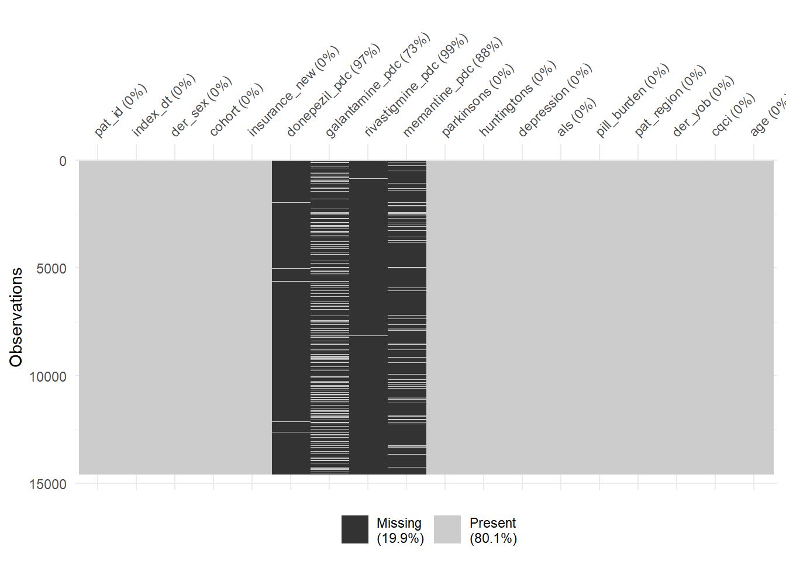
gg_miss_var(data)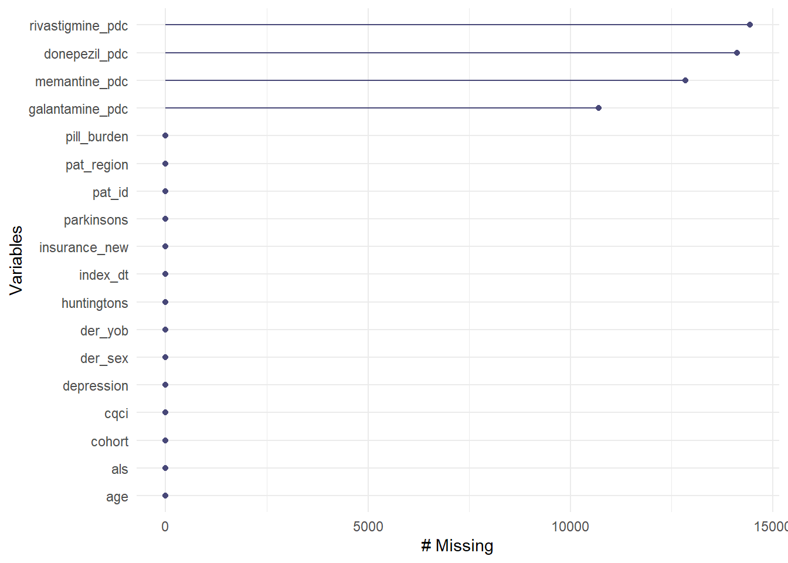
Looks great! The only variables that are missing are the pdc’s for each drug, which makes sense, because many patients did not use specific drugs.
The data analysts did an exceptional job with this data!
Data Quality Check
# This function summarizes the mins and maxes of numeric variables
summarize_column <- function(column) {
if (is.numeric(column)) {
return(data.frame(
Type = "Numeric",
Min = min(column, na.rm = TRUE),
Max = max(column, na.rm = TRUE)
))
}
}
# Apply the function to each column and bind the results into a single data frame
summary_df <- map_dfr(data, summarize_column, .id = "Column") %>%
mutate(across(everything(), ~ format(., scientific = FALSE))) # Eliminates scientific notation
# Pretty print the mins and maxes of longform data_2
kable(summary_df, format = "html") %>%
kable_styling(bootstrap_options = c("striped", "hover", "condensed"))| Column | Type | Min | Max |
|---|---|---|---|
| donepezil_pdc | Numeric | 0.001610306 | 1 |
| galantamine_pdc | Numeric | 0.001680672 | 1 |
| rivastigmine_pdc | Numeric | 0.028971963 | 1 |
| memantine_pdc | Numeric | 0.001930502 | 1 |
| parkinsons | Numeric | 0.000000000 | 1 |
| huntingtons | Numeric | 0.000000000 | 1 |
| depression | Numeric | 0.000000000 | 1 |
| als | Numeric | 0.000000000 | 1 |
| pill_burden | Numeric | 0.000000000 | 83 |
| der_yob | Numeric | 0.000000000 | 1972 |
| cqci | Numeric | 0.000000000 | 21 |
| age | Numeric | 50.000000000 | 86 |
VERY interesting. Nobody has a pdc of exactly 0, which means that some patients who tried a drug must have only tried it once, before having some kind of adverse reaction and stopping it immediately. If patients did not ever try a drug, that pdc is coded as missing.
All variables fall within the expected ranges. We also see that the minimum age is 50, which was one of our inclusion criteria.
Univariate Distributions
Here we will examine the values and distributions of each variable to make sure they are accurate before entering them into our model.
Covariates
# Examine patterns
plot(data$index_dt)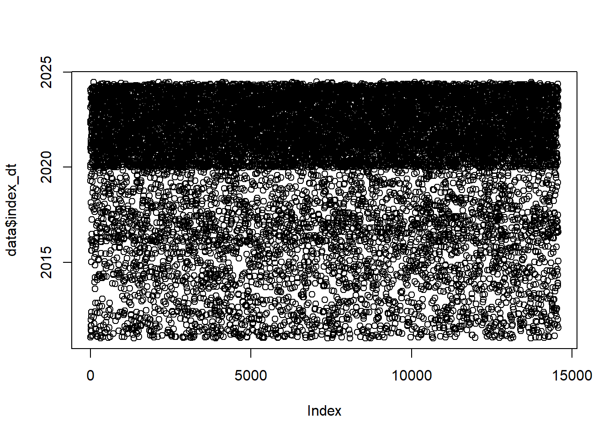
We can see that the vast majority of patients have an index date of 2020 or later (biased towards more recent drug developments).
Let’s examine another way.
# Examine histogram and qq plot
distr_plots(data, "index_dt")Warning: `aes_string()` was deprecated in ggplot2 3.0.0.
ℹ Please use tidy evaluation idioms with `aes()`.
ℹ See also `vignette("ggplot2-in-packages")` for more information.Warning: Computation failed in `stat_qq_line()`.
Caused by error in `Ops.Date()`:
! * not defined for "Date" objects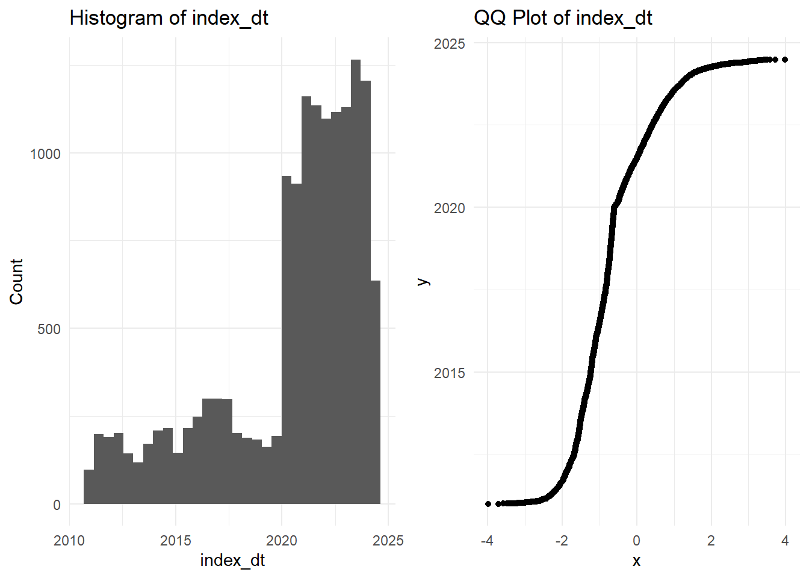
We have a nice logistic curve/sigmoid pattern.
Let’s examine how many patients started after 2020 vs before.
# Plot table of patients with index date before/after 2020
data$index_2020 <- ifelse(data$index_dt >= as.Date("2020-01-01"), "After 2020", "Before 2020")
# Print bar plot
ggplot(data, aes(x = index_2020)) +
geom_bar() +
theme_minimal() +
labs(title = "Barplot of Index 2020",
x = "Index Date",
y = "Count")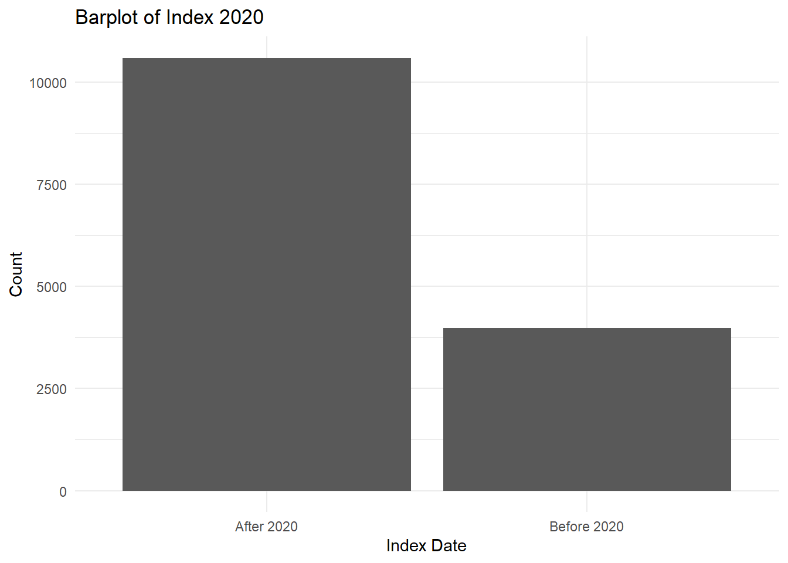
# Print frequency table
pretty_print(table(data$index_2020))| Var1 | Freq |
|---|---|
| After 2020 | 10589 |
| Before 2020 | 3980 |
72% of our sample comes from Jan 1, 2020 or after!
# Plot barplot of sex
ggplot(data, aes(x = der_sex)) +
geom_bar() +
theme_minimal() +
labs(
title = "Barplot of Sex",
x = "Sex",
y = "Count")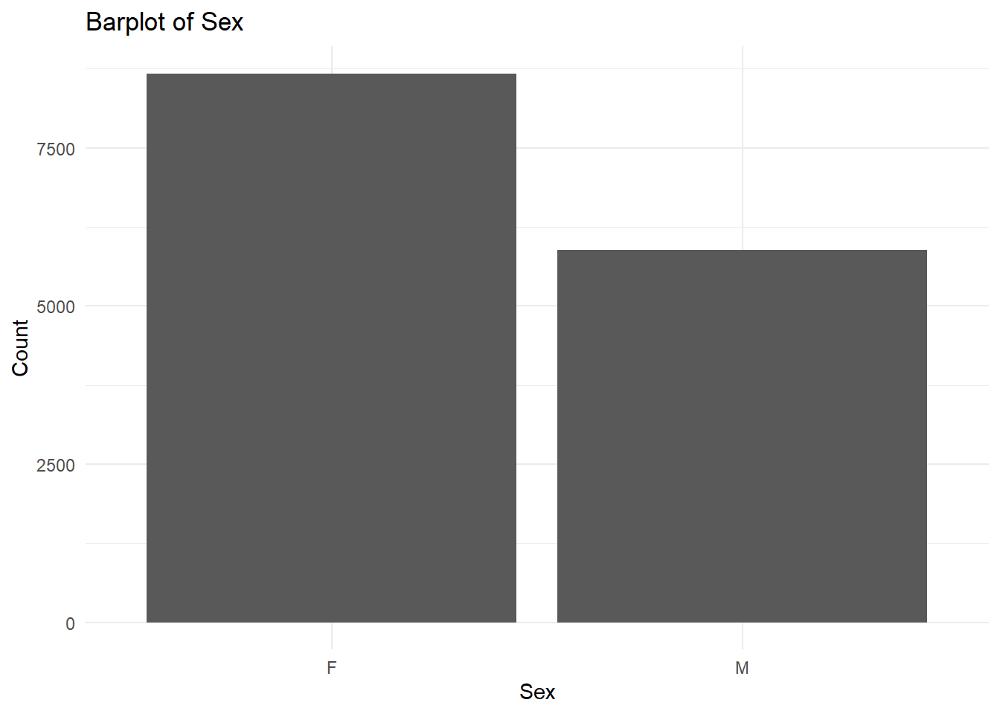
# Examine table
pretty_print(table(data$der_sex))| Var1 | Freq |
|---|---|
| F | 8678 |
| M | 5891 |
59.6% of our sample is female!
# Create barplot of outcome
ggplot(data, aes(x = cohort)) +
geom_bar() +
theme_minimal() +
labs(title = "Barplot of Outcome Group",
x = "Outcome Group",
y = "Count")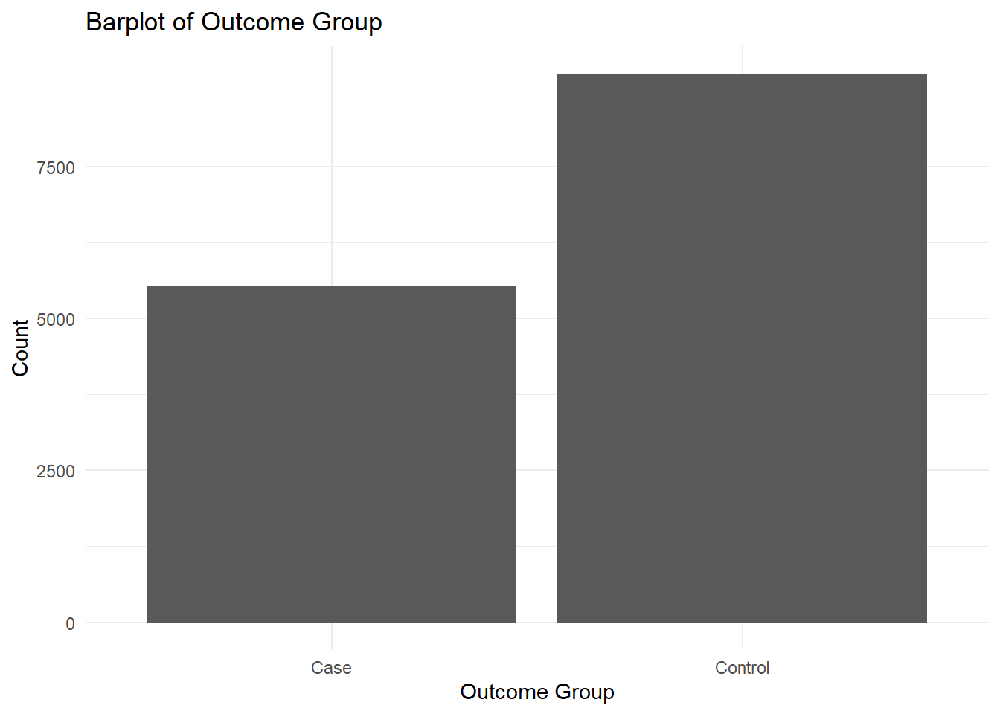
# Examine table
pretty_print(table(data$cohort))| Var1 | Freq |
|---|---|
| Case | 5539 |
| Control | 9030 |
Looks like we have a sufficiently large sample size!
# Create barplot
ggplot(data, aes(x = insurance_new)) +
geom_bar() +
theme_minimal() +
labs(title = "Barplot of Insurance Type",
x = "Insurance Type",
y = "Count")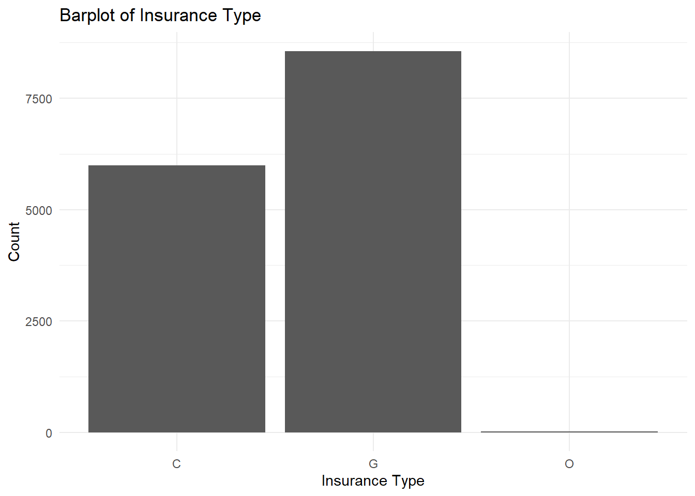
# Examine table
pretty_print(table(data$insurance_new))| Var1 | Freq |
|---|---|
| C | 5992 |
| G | 8560 |
| O | 17 |
It looks like very few patients were of the O category of insurance type, we may have to remove them before conducting the analysis.
# Create barplot
ggplot(data, aes(x = parkinsons)) +
geom_bar()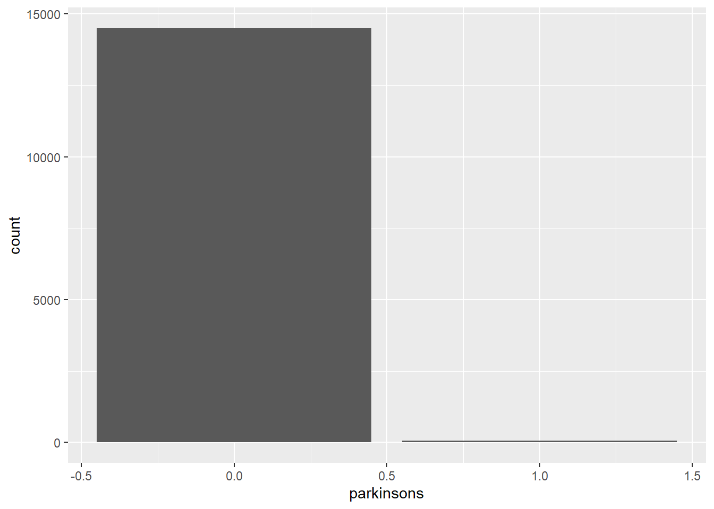
# Examine table
pretty_print(table(data$parkinsons))| Var1 | Freq |
|---|---|
| 0 | 14502 |
| 1 | 67 |
# Examine Table
pretty_print(data |> count(cohort, parkinsons))| cohort | parkinsons | n |
|---|---|---|
| Case | 0 | 5514 |
| Case | 1 | 25 |
| Control | 0 | 8988 |
| Control | 1 | 42 |
Only 61 patients had a parkinson’s diagnosis. 25 are cases, 42 are controls. We will likely not end up using this.
# Create barplot
ggplot(data, aes(x = huntingtons)) +
geom_bar()# Examine table
pretty_print(table(data$huntingtons))| Var1 | Freq |
|---|---|
| 0 | 14561 |
| 1 | 8 |
# Examine Table
pretty_print(data |> count(cohort, huntingtons))| cohort | huntingtons | n |
|---|---|---|
| Case | 0 | 5536 |
| Case | 1 | 3 |
| Control | 0 | 9025 |
| Control | 1 | 5 |
Only 8 patients have Huntingtons. We will exclude this as a covariate.
# Create barplot
ggplot(data, aes(x = depression)) +
geom_bar()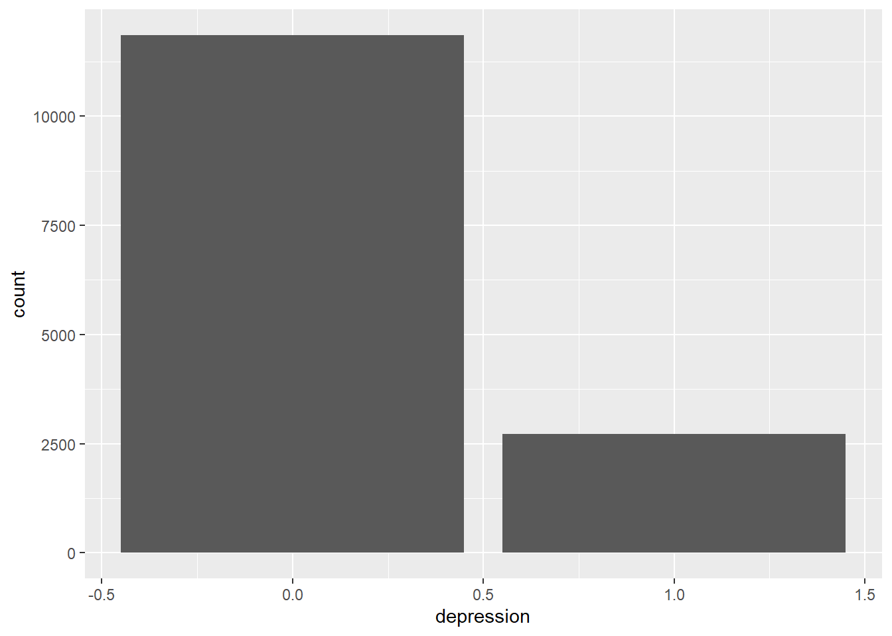
# Examine table
pretty_print(table(data$depression))| Var1 | Freq |
|---|---|
| 0 | 11852 |
| 1 | 2717 |
# Examine Table
pretty_print(data |> count(cohort, depression))| cohort | depression | n |
|---|---|---|
| Case | 0 | 4366 |
| Case | 1 | 1173 |
| Control | 0 | 7486 |
| Control | 1 | 1544 |
We have a sufficient sample size to use depression as a covariate in our analysis.
# Create barplot
ggplot(data, aes(x = als)) +
geom_bar()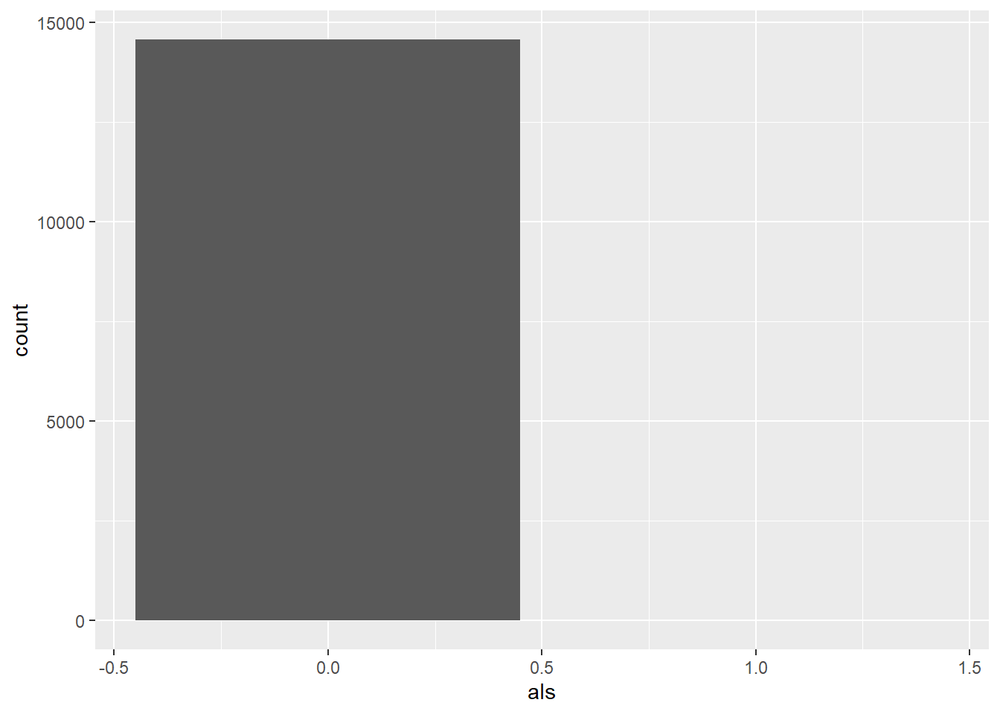
# Examine table
pretty_print(table(data$als))| Var1 | Freq |
|---|---|
| 0 | 14563 |
| 1 | 6 |
# Examine Table
pretty_print(data |> count(cohort, als))| cohort | als | n |
|---|---|---|
| Case | 0 | 5538 |
| Case | 1 | 1 |
| Control | 0 | 9025 |
| Control | 1 | 5 |
Only 6 patients were diagnosed with ALS. We will exclude als as a covariate in this analysis.
# Create plots
distr_plots(data, "pill_burden")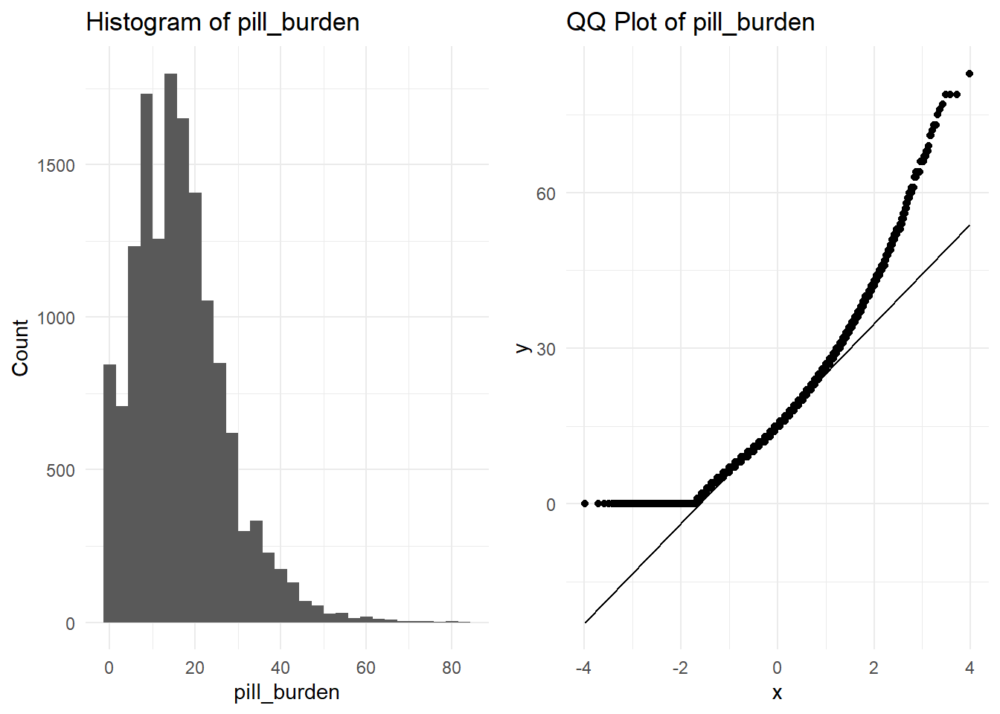
pill_burden is useable. It is not normally distributed. As expected, most patients have a smaller pill burden while some have a very large one.
# Create barplot
ggplot(data, aes(x = pat_region)) +
geom_bar() +
theme_minimal()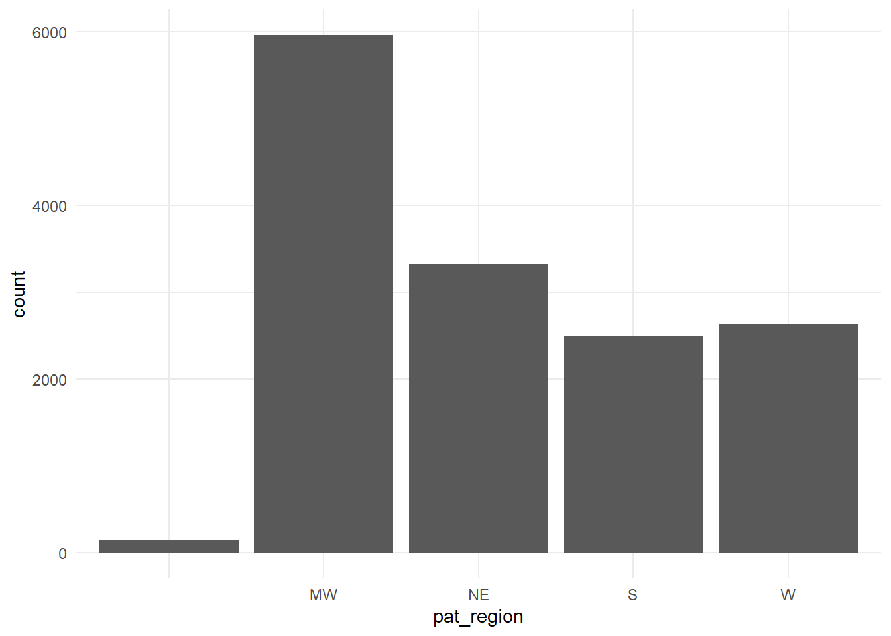
Looks like NA’s are being represented as blank strings, let’s fix.
# Fix NA values for pat_region
data <- data |>
mutate(pat_region = if_else(pat_region == "", "Missing", pat_region))# Examine table
pretty_print(table(data$pat_region))| Var1 | Freq |
|---|---|
| Missing | 147 |
| MW | 5964 |
| NE | 3324 |
| S | 2500 |
| W | 2634 |
# Examine Table
pretty_print(data |> count(cohort, pat_region))| cohort | pat_region | n |
|---|---|---|
| Case | MW | 2368 |
| Case | Missing | 50 |
| Case | NE | 1243 |
| Case | S | 971 |
| Case | W | 907 |
| Control | MW | 3596 |
| Control | Missing | 97 |
| Control | NE | 2081 |
| Control | S | 1529 |
| Control | W | 1727 |
## Print barplot by region
ggplot(data, aes(x = cohort, fill = pat_region)) +
geom_bar(position = "dodge")+
theme_minimal() +
scale_fill_brewer(palette = "Pastel1")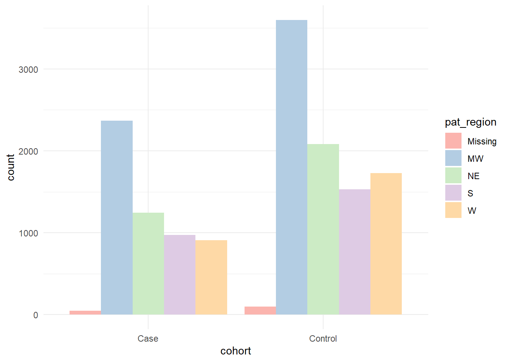
We have sufficient sample size to use pat_region as a covariate!
# Create plots
distr_plots(data, "cqci", 22)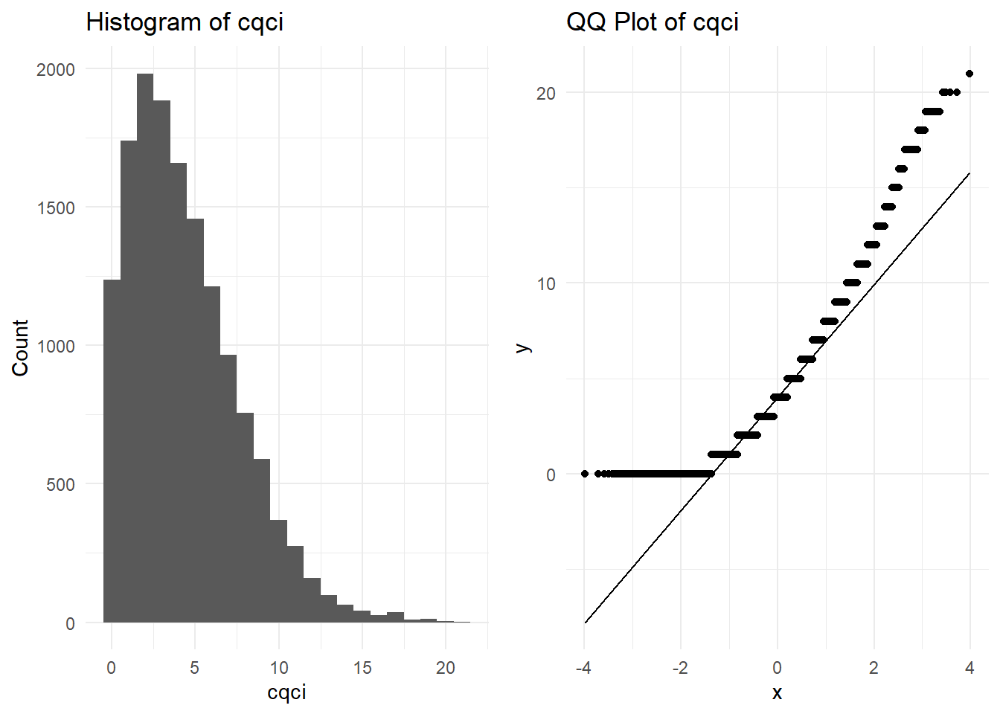
cqci is also useable as a covariate.
Primary Explanatory Variables
# Create plots
distr_plots(data, "donepezil_pdc")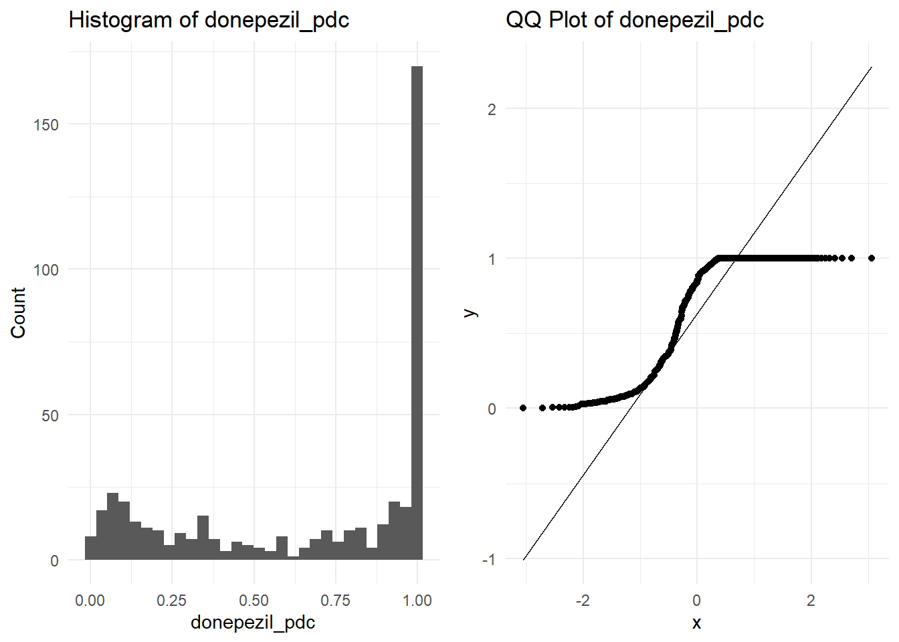
Very interesting, so there’s actually a LOT of patients (159) that had 100% of their pdc as donepezil.
We will likely still have to make the cutoff be something like 80% to allow for a large enough sample size for each condition, but this is a good start.
# Print number of patients with 100% pdc of donepezil
data |>
filter(donepezil_pdc == 1) |>
nrow()[1] 159How about how many patients have a pdc of .80 or higher?
# Print number of patients with at least 80% pdc of donepezil
data |>
filter(donepezil_pdc >= 0.80) |>
nrow()[1] 239Slightly better. We may consider an analysis of just 100% pdc if we have sufficient sample size.
# Create plots
distr_plots(data, "galantamine_pdc")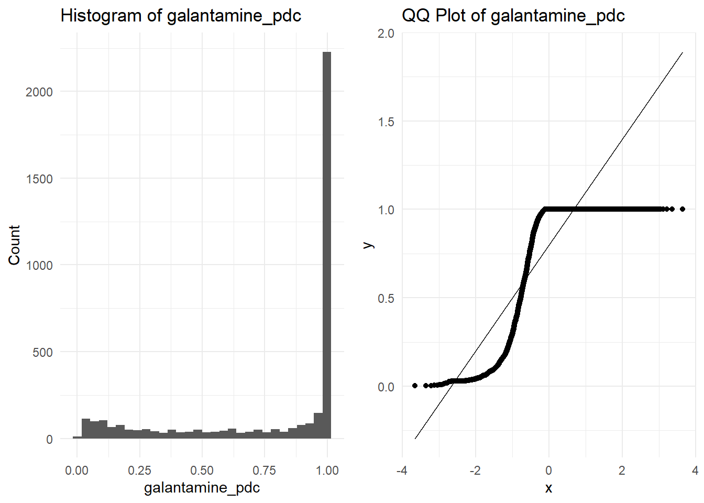
# Print number of patients with 100% pdc of galantamine
data |>
filter(galantamine_pdc == 1) |>
nrow()[1] 2117# Print number of patients with at least 80% pdc of galantamine
data |>
filter(galantamine_pdc >= 0.80) |>
nrow()[1] 2647Same case for galantamine. Except here we have 2117 patients who used galantamine and nothing else!
# Create plots
distr_plots(data, "rivastigmine_pdc")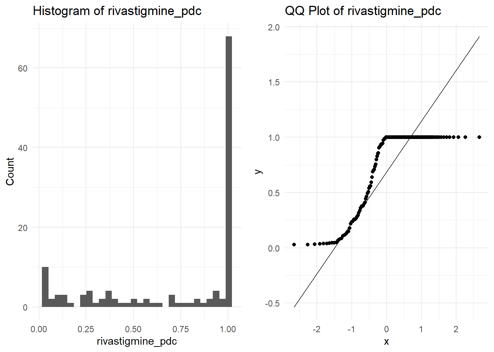
# Print number of patients with 100% pdc of rivastigmine
data |>
filter(rivastigmine_pdc == 1) |>
nrow()[1] 66# Print number of patients with at least 80% pdc of rivastigmine
data |>
filter(rivastigmine_pdc >= 0.80) |>
nrow()[1] 79Much fewer patients are using rivastigmine. 66 used it as their only drug, this may be insufficient for analysis.
# Create plots
distr_plots(data, "memantine_pdc")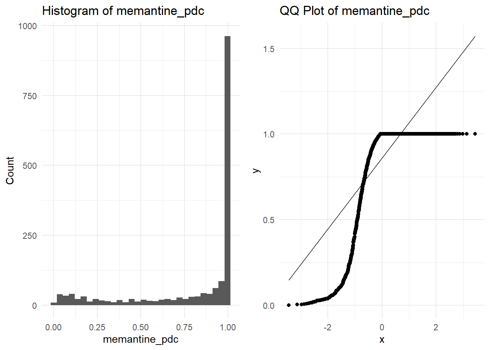
# Print number of patients with 100% pdc of memantine
data |>
filter(memantine_pdc == 1) |>
nrow()[1] 901# Print number of patients with at least 80% pdc of memantine
data |>
filter(memantine_pdc >= 0.80) |>
nrow()[1] 1229Looks good.
Summary
We do not have a sufficient sample size to use huntingtons or als
parkinsons is close to the 30 per group cutoff, having 25 patients in the smallest category. We will attempt an analysis with it but likely drop it as well.
rivastigmine may have too few users to use in our analysis (79 with 80% pdc).
All other variables are clean and analysis ready.
Variable Creation
I want to examine various circumstances, using pdc as either a continuous variable or as a dichotomous variable.
From examining the distributions, we saw that there were many patients that had a 100% pdc with each drug, thus this is a valid way of performing this analysis.
Create Variables
# Create dummy variables for pdc for each drug
data <- data |>
mutate(donepezil_100 = ifelse(donepezil_pdc == 1, 1, 0),
donepezil_80 = ifelse(donepezil_pdc >= 0.80, 1, 0),
galantamine_100 = ifelse(galantamine_pdc == 1, 1, 0),
galantamine_80 = ifelse(galantamine_pdc >= 0.80, 1, 0),
rivastigmine_100 = ifelse(rivastigmine_pdc == 1, 1, 0),
rivastigmine_80 = ifelse(rivastigmine_pdc >= 0.80, 1, 0),
memantine_100 = ifelse(memantine_pdc == 1, 1, 0),
memantine_80 = ifelse(memantine_pdc >= 0.80, 1, 0))Table One
Factor and Label Variables
# Factor variables
data <- data |>
mutate(donepezil_100 = factor(if_else(is.na(donepezil_100), 0, donepezil_100),
levels = c(0, 1), labels = c("No", "Yes")),
donepezil_80 = factor(if_else(is.na(donepezil_80), 0, donepezil_80),
levels = c(0, 1), labels = c("No", "Yes")),
galantamine_100 = factor(if_else(is.na(galantamine_100), 0, galantamine_100),
levels = c(0, 1), labels = c("No", "Yes")),
galantamine_80 = factor(if_else(is.na(galantamine_80), 0, galantamine_80),
levels = c(0, 1), labels = c("No", "Yes")),
rivastigmine_100 = factor(if_else(is.na(rivastigmine_100), 0, rivastigmine_100),
levels = c(0, 1), labels = c("No", "Yes")),
rivastigmine_80 = factor(if_else(is.na(rivastigmine_80), 0, rivastigmine_80),
levels = c(0, 1), labels = c("No", "Yes")),
memantine_100 = factor(if_else(is.na(memantine_100), 0, memantine_100),
levels = c(0, 1), labels = c("No", "Yes")),
memantine_80 = factor(if_else(is.na(memantine_80), 0, memantine_80),
levels = c(0, 1), labels = c("No", "Yes")),
parkinsons = factor(parkinsons, levels = c(0,1), labels = c("No", "Yes")),
huntingtons = factor(huntingtons, levels = c(0,1), labels = c("No", "Yes")),
als = factor(als, levels = c(0,1), labels = c("No", "Yes")),
depression = factor(depression, levels = c(0,1), labels = c("No", "Yes")))
# Change label of levels
data <- data |>
mutate(der_sex = ifelse(der_sex == "F", "Female", "Male"))
# Create labels for variables to make the names of each variable more professional in outputs
label(data$der_sex) <- "Sex"
label(data$cohort) <- "Alzheimer's Disease"
label(data$insurance_new) <- "Insurance Type"
label(data$donepezil_pdc) <- "Donepezil PDC"
label(data$galantamine_pdc) <- "Galantamine PDC"
label(data$rivastigmine_pdc) <- "Rivastigmine PDC"
label(data$memantine_pdc) <- "Memantine PDC"
label(data$parkinsons) <- "Parkinson's Disease"
label(data$huntingtons) <- "Huntington's Disease"
label(data$depression) <- "Depression"
label(data$als) <- "Amyotrophic Lateral Sclerosis"
label(data$pill_burden) <- "Pill Burden"
label(data$pat_region) <- "Region"
label(data$cqci) <- "Charlson Comobidity Score"
label(data$age) <- "Age"
label(data$donepezil_100) <- "Donepezil 100% PDC"
label(data$galantamine_100) <- "Galantamine 100% PDC"
label(data$rivastigmine_100) <- "Rivastigmine 100% PDC"
label(data$memantine_100) <- "Memantine 100% PDC"Create Table 1
# Create table 1, stratified by cohort/outcome group
table_one <- table1(~ age + der_sex + insurance_new +
donepezil_pdc + galantamine_pdc + rivastigmine_pdc + memantine_pdc +
donepezil_100 + galantamine_100 + rivastigmine_100 + memantine_100 +
parkinsons + huntingtons + als + depression +
pill_burden + cqci | cohort, data = data,
caption = "Table 1: Desriptive Statistics",
overall = c(right="Total"))
# Examine
table_one| Case (N=5539) |
Control (N=9030) |
Total (N=14569) |
|
|---|---|---|---|
| Age | |||
| Mean (SD) | 81.0 (6.85) | 81.0 (6.75) | 81.0 (6.79) |
| Median [Min, Max] | 86.0 [50.0, 86.0] | 86.0 [50.0, 86.0] | 86.0 [50.0, 86.0] |
| Sex | |||
| Female | 3311 (59.8%) | 5367 (59.4%) | 8678 (59.6%) |
| Male | 2228 (40.2%) | 3663 (40.6%) | 5891 (40.4%) |
| Insurance Type | |||
| C | 2321 (41.9%) | 3671 (40.7%) | 5992 (41.1%) |
| G | 3213 (58.0%) | 5347 (59.2%) | 8560 (58.8%) |
| O | 5 (0.1%) | 12 (0.1%) | 17 (0.1%) |
| Donepezil PDC | |||
| Mean (SD) | 0.681 (0.361) | 0.630 (0.392) | 0.661 (0.374) |
| Median [Min, Max] | 0.886 [0.00402, 1.00] | 0.823 [0.00161, 1.00] | 0.851 [0.00161, 1.00] |
| Missing | 5263 (95.0%) | 8859 (98.1%) | 14122 (96.9%) |
| Galantamine PDC | |||
| Mean (SD) | 0.816 (0.307) | 0.725 (0.360) | 0.782 (0.331) |
| Median [Min, Max] | 1.00 [0.00264, 1.00] | 0.996 [0.00168, 1.00] | 1.00 [0.00168, 1.00] |
| Missing | 3137 (56.6%) | 7558 (83.7%) | 10695 (73.4%) |
| Rivastigmine PDC | |||
| Mean (SD) | 0.767 (0.339) | 0.640 (0.395) | 0.726 (0.362) |
| Median [Min, Max] | 1.00 [0.0363, 1.00] | 0.869 [0.0290, 1.00] | 1.00 [0.0290, 1.00] |
| Missing | 5452 (98.4%) | 8988 (99.5%) | 14440 (99.1%) |
| Memantine PDC | |||
| Mean (SD) | 0.825 (0.295) | 0.772 (0.331) | 0.807 (0.309) |
| Median [Min, Max] | 1.00 [0.00813, 1.00] | 0.992 [0.00193, 1.00] | 1.00 [0.00193, 1.00] |
| Missing | 4401 (79.5%) | 8448 (93.6%) | 12849 (88.2%) |
| Donepezil 100% PDC | |||
| No | 5439 (98.2%) | 8971 (99.3%) | 14410 (98.9%) |
| Yes | 100 (1.8%) | 59 (0.7%) | 159 (1.1%) |
| Galantamine 100% PDC | |||
| No | 4151 (74.9%) | 8301 (91.9%) | 12452 (85.5%) |
| Yes | 1388 (25.1%) | 729 (8.1%) | 2117 (14.5%) |
| Rivastigmine 100% PDC | |||
| No | 5490 (99.1%) | 9013 (99.8%) | 14503 (99.5%) |
| Yes | 49 (0.9%) | 17 (0.2%) | 66 (0.5%) |
| Memantine 100% PDC | |||
| No | 4921 (88.8%) | 8747 (96.9%) | 13668 (93.8%) |
| Yes | 618 (11.2%) | 283 (3.1%) | 901 (6.2%) |
| Parkinson's Disease | |||
| No | 5514 (99.5%) | 8988 (99.5%) | 14502 (99.5%) |
| Yes | 25 (0.5%) | 42 (0.5%) | 67 (0.5%) |
| Huntington's Disease | |||
| No | 5536 (99.9%) | 9025 (99.9%) | 14561 (99.9%) |
| Yes | 3 (0.1%) | 5 (0.1%) | 8 (0.1%) |
| Amyotrophic Lateral Sclerosis | |||
| No | 5538 (100.0%) | 9025 (99.9%) | 14563 (100.0%) |
| Yes | 1 (0.0%) | 5 (0.1%) | 6 (0.0%) |
| Depression | |||
| No | 4366 (78.8%) | 7486 (82.9%) | 11852 (81.4%) |
| Yes | 1173 (21.2%) | 1544 (17.1%) | 2717 (18.6%) |
| Pill Burden | |||
| Mean (SD) | 15.8 (10.1) | 16.9 (11.0) | 16.5 (10.7) |
| Median [Min, Max] | 14.0 [0, 79.0] | 16.0 [0, 83.0] | 15.0 [0, 83.0] |
| Charlson Comobidity Score | |||
| Mean (SD) | 4.37 (3.23) | 4.36 (3.31) | 4.36 (3.28) |
| Median [Min, Max] | 4.00 [0, 21.0] | 4.00 [0, 20.0] | 4.00 [0, 21.0] |
Bivariate Comparisons
Covariates
# Create plot
ggplot(data, aes(x = der_sex, fill = cohort)) +
geom_bar(position = "dodge") +
theme_minimal() +
scale_fill_brewer(palette = "Pastel1")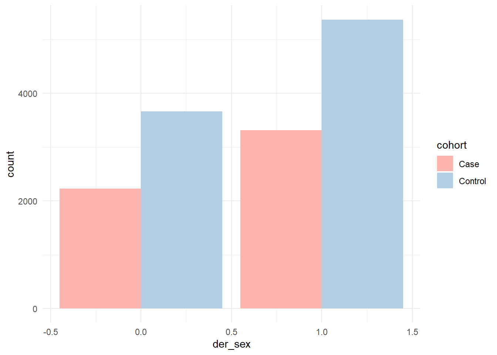
# Examine table
pretty_print(data |> count(der_sex, cohort))| der_sex | cohort | n |
|---|---|---|
| 0 | Case | 2228 |
| 0 | Control | 3663 |
| 1 | Case | 3311 |
| 1 | Control | 5367 |
# Test for correlation
chisq.test(table(data$der_sex, data$cohort))
Pearson's Chi-squared test with Yates' continuity correction
data: table(data$der_sex, data$cohort)
X-squared = 0.15182, df = 1, p-value = 0.6968The result of the chi-square test is not significant, and thus there is no strong evidence for an association between sex and receiving an AD diagnosis.
# Create plot
ggplot(data, aes(x = insurance_new, fill = cohort)) +
geom_bar(position = "dodge") +
theme_minimal() +
scale_fill_brewer(palette = "Pastel1")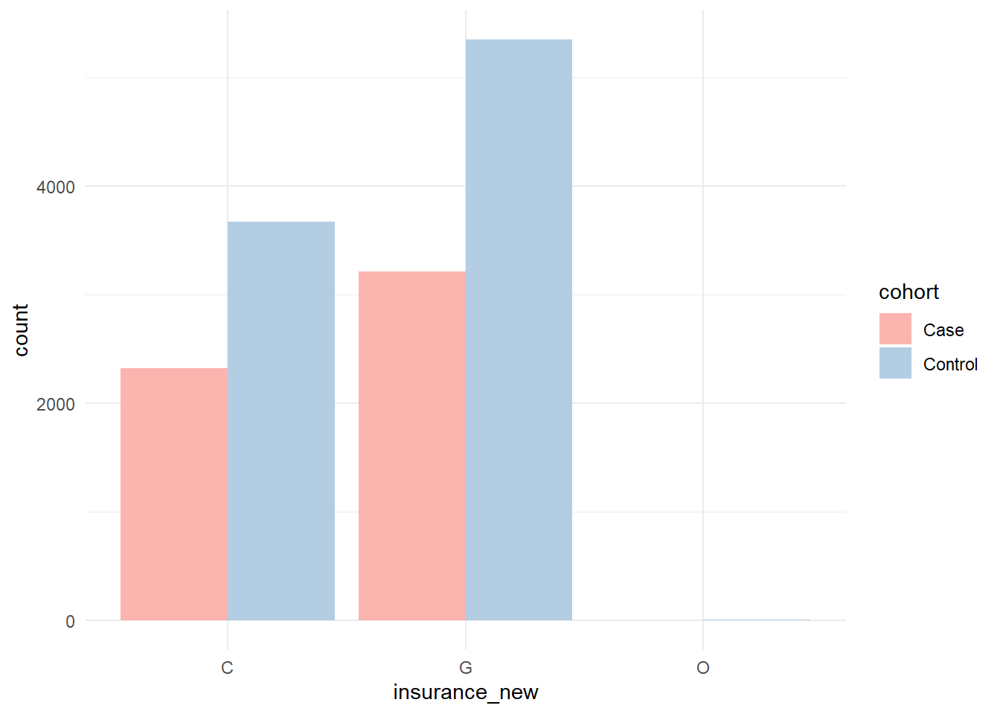
# Examine table
pretty_print(data |> count(insurance_new, cohort))| insurance_new | cohort | n |
|---|---|---|
| C | Case | 2321 |
| C | Control | 3671 |
| G | Case | 3213 |
| G | Control | 5347 |
| O | Case | 5 |
| O | Control | 12 |
# Test for correlation
chisq.test(table(data$insurance_new, data$cohort))
Pearson's Chi-squared test
data: table(data$insurance_new, data$cohort)
X-squared = 2.6888, df = 2, p-value = 0.2607The p-value is non-significant, and thus there is no strong evidence for an association between insurance type and receiving and AD diagnosis.
# Create plot
ggplot(data, aes(x = parkinsons, fill = cohort)) +
geom_bar(position = "dodge") +
theme_minimal() +
scale_fill_brewer(palette = "Pastel1")# Examine table
pretty_print(data |> count(parkinsons, cohort))| parkinsons | cohort | n |
|---|---|---|
| No | Case | 5514 |
| No | Control | 8988 |
| Yes | Case | 25 |
| Yes | Control | 42 |
# Test for correlation
chisq.test(table(data$parkinsons, data$cohort))
Pearson's Chi-squared test with Yates' continuity correction
data: table(data$parkinsons, data$cohort)
X-squared = 0.000000000000000000000000000000059095, df = 1, p-value = 1There is not a significant association between receiving a parkinsons disease diagnosis and receiving an AD diagnosis (p = 1).
# Create plot
ggplot(data, aes(x = huntingtons, fill = cohort)) +
geom_bar(position = "dodge") +
theme_minimal() +
scale_fill_brewer(palette = "Pastel1")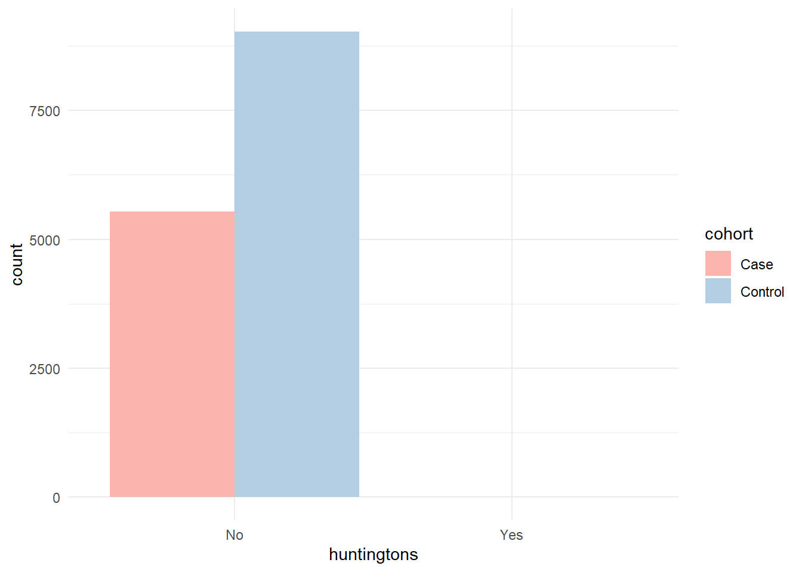
# Examine table
pretty_print(data |> count(huntingtons, cohort))| huntingtons | cohort | n |
|---|---|---|
| No | Case | 5536 |
| No | Control | 9025 |
| Yes | Case | 3 |
| Yes | Control | 5 |
# Test for correlation
chisq.test(table(data$huntingtons, data$cohort))Warning in chisq.test(table(data$huntingtons, data$cohort)): Chi-squared
approximation may be incorrect
Pearson's Chi-squared test with Yates' continuity correction
data: table(data$huntingtons, data$cohort)
X-squared = 0.0000000000000000000000000077962, df = 1, p-value = 1# Create plot
ggplot(data, aes(x = als, fill = cohort)) +
geom_bar(position = "dodge") +
theme_minimal() +
scale_fill_brewer(palette = "Pastel1")
# Examine table
pretty_print(data |> count(als, cohort))| als | cohort | n |
|---|---|---|
| No | Case | 5538 |
| No | Control | 9025 |
| Yes | Case | 1 |
| Yes | Control | 5 |
# Test for correlation
chisq.test(table(data$als, data$cohort))Warning in chisq.test(table(data$als, data$cohort)): Chi-squared approximation
may be incorrect
Pearson's Chi-squared test with Yates' continuity correction
data: table(data$als, data$cohort)
X-squared = 0.43175, df = 1, p-value = 0.5111# Create plot
ggplot(data, aes(y = pill_burden, x = cohort, fill = cohort)) +
geom_boxplot() +
theme_minimal() +
scale_fill_brewer(palette = "Pastel1") +
labs(title = "Boxplots of Pill Burden by Cohort",
x = "Cohort",
y = "Pill Burden")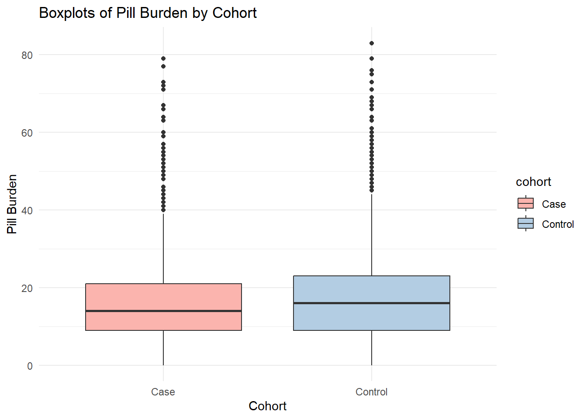
# Run T test
t.test(pill_burden ~ cohort, data = data)
Welch Two Sample t-test
data: pill_burden by cohort
t = -6.5414, df = 12427, p-value = 0.00000000006335
alternative hypothesis: true difference in means between group Case and group Control is not equal to 0
95 percent confidence interval:
-1.5163814 -0.8171324
sample estimates:
mean in group Case mean in group Control
15.76602 16.93278 There is a signficant association between pill burden and cohort (p < 0.0001). Patients who received an AD diagnosis had a mean pill burden of 15.77, compared to patients who did not receive an AD diagnosis who had a mean pill burden of 16.93 (t = 6.54).
# Create plot
ggplot(data, aes(y = cqci, x = cohort, fill = cohort)) +
geom_boxplot() +
theme_minimal() +
scale_fill_brewer(palette = "Pastel1") +
labs(title = "Boxplots of Charlson Comorbidity by Cohort",
x = "Cohort",
y = "Charlson Comorbidity Score")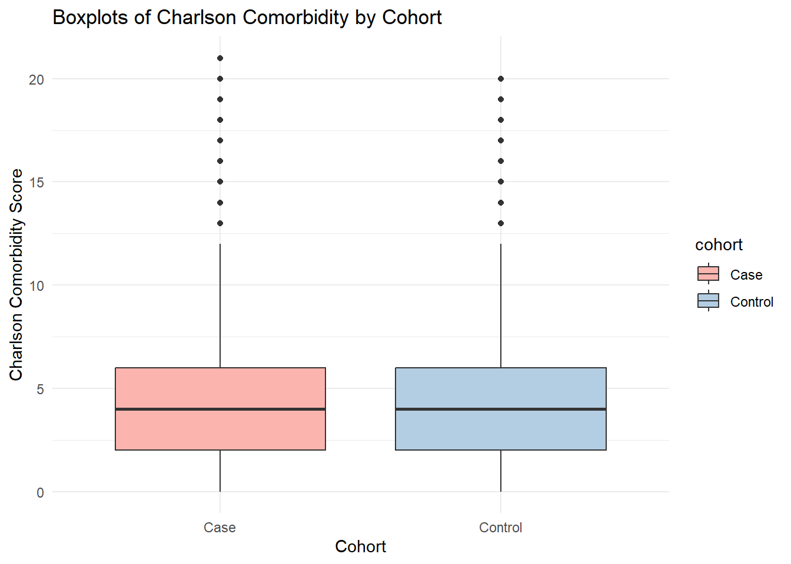
# Run T test
t.test(cqci ~ cohort, data = data)
Welch Two Sample t-test
data: cqci by cohort
t = 0.1518, df = 11919, p-value = 0.8793
alternative hypothesis: true difference in means between group Case and group Control is not equal to 0
95 percent confidence interval:
-0.1006794 0.1175820
sample estimates:
mean in group Case mean in group Control
4.367034 4.358583 # Create plot
ggplot(data, aes(x = pat_region, fill = cohort)) +
geom_bar(position = "dodge") +
theme_minimal() +
scale_fill_brewer(palette = "Pastel1")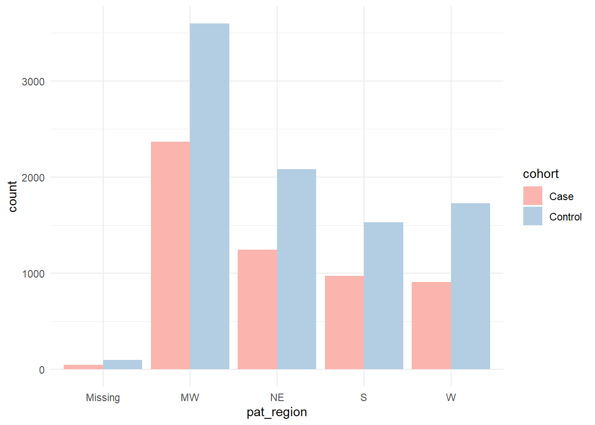
# Examine table
pretty_print(data |> count(pat_region, cohort))| pat_region | cohort | n |
|---|---|---|
| MW | Case | 2368 |
| MW | Control | 3596 |
| Missing | Case | 50 |
| Missing | Control | 97 |
| NE | Case | 1243 |
| NE | Control | 2081 |
| S | Case | 971 |
| S | Control | 1529 |
| W | Case | 907 |
| W | Control | 1727 |
# Test for correlation
chisq.test(table(data$pat_region, data$cohort))
Pearson's Chi-squared test
data: table(data$pat_region, data$cohort)
X-squared = 23.823, df = 4, p-value = 0.00008669# Convert cohort to a factor
data$pat_region <- factor(data$pat_region)
# Change reference level
data$pat_region <- relevel(data$pat_region, ref = "W")
# Convert cohort to numeric for the logistic regression
data$cohort <- ifelse(data$cohort == "Case", 1, 0) # Convert to numeric (binary)
# Run a logistic regression
model <- glm(cohort ~ pat_region, family = binomial, data = data)
summary(model)
Call:
glm(formula = cohort ~ pat_region, family = binomial, data = data)
Coefficients:
Estimate Std. Error z value Pr(>|z|)
(Intercept) -0.64400 0.04101 -15.705 < 0.0000000000000002 ***
pat_regionMissing -0.01869 0.17886 -0.104 0.91678
pat_regionMW 0.22622 0.04881 4.635 0.00000357 ***
pat_regionNE 0.12868 0.05447 2.363 0.01815 *
pat_regionS 0.18996 0.05801 3.274 0.00106 **
---
Signif. codes: 0 '***' 0.001 '**' 0.01 '*' 0.05 '.' 0.1 ' ' 1
(Dispersion parameter for binomial family taken to be 1)
Null deviance: 19352 on 14568 degrees of freedom
Residual deviance: 19328 on 14564 degrees of freedom
AIC: 19338
Number of Fisher Scoring iterations: 4# Compare group differences while controlling for multiple pairwise comparisons
pairwise.prop.test(table(data$pat_region, data$cohort), p.adjust.method = "bonferroni")
Pairwise comparisons using Pairwise comparison of proportions
data: table(data$pat_region, data$cohort)
W Missing MW NE
Missing 1.000 - - -
MW 0.000039 1.000 - -
NE 0.195 1.000 0.302 -
S 0.012 1.000 1.000 1.000
P value adjustment method: bonferroni There is a significant association between region and the odds of receiving an AD diagnosis (p-adjusted < 0.0001). Specifically, patients in the west have 0.80 times the odds of receiving an AD diagnosis compared to this in the Northeast (p < 0.0001, z = 4.64), and 0.83 times the odds of patients in the South (p-adjusted = 0.012). Bonferonni correction.
# Convert cohort to numeric for the logistic regression
data$cohort <- ifelse(data$cohort == 1, "Case", "Control")
# Convert cohort to a factor
data$cohort <- factor(data$cohort)
# Create plot
ggplot(data, aes(x = depression, fill = cohort)) +
geom_bar(position = "dodge") +
theme_minimal() +
scale_fill_brewer(palette = "Pastel1") +
labs(title = "Barplot of Depression by Cohort",
x = "Depression",
y = "Count")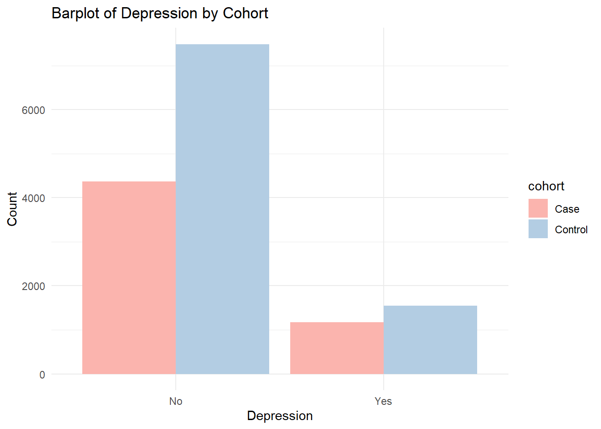
# Examine table
pretty_print(data |> count(depression, cohort))| depression | cohort | n |
|---|---|---|
| No | Case | 4366 |
| No | Control | 7486 |
| Yes | Case | 1173 |
| Yes | Control | 1544 |
# Test for correlation
chisq.test(table(data$depression, data$cohort))
Pearson's Chi-squared test with Yates' continuity correction
data: table(data$depression, data$cohort)
X-squared = 37.374, df = 1, p-value = 0.0000000009751# Run a logistic regression
model <- glm(cohort ~ depression, family = binomial, data = data)
# Examine model
summary(model)
Call:
glm(formula = cohort ~ depression, family = binomial, data = data)
Coefficients:
Estimate Std. Error z value Pr(>|z|)
(Intercept) 0.53919 0.01904 28.315 < 0.0000000000000002 ***
depressionYes -0.26438 0.04316 -6.125 0.000000000904 ***
---
Signif. codes: 0 '***' 0.001 '**' 0.01 '*' 0.05 '.' 0.1 ' ' 1
(Dispersion parameter for binomial family taken to be 1)
Null deviance: 19352 on 14568 degrees of freedom
Residual deviance: 19315 on 14567 degrees of freedom
AIC: 19319
Number of Fisher Scoring iterations: 4There is a significant association between depression and receiving an AD diagnosis (p < 0.0001). Patients with depression had a 1.30 times the odds of receiving an AD diagnosis compared to thos who did not have an AD diagnosis (z = 6.13).
# Create plot
ggplot(data, aes(x = age, fill = cohort)) +
geom_bar(position = "dodge") +
theme_minimal() +
scale_fill_brewer(palette = "Pastel1") +
labs(title = "Barplot of Age by Cohort",
x = "Age",
y = "Count")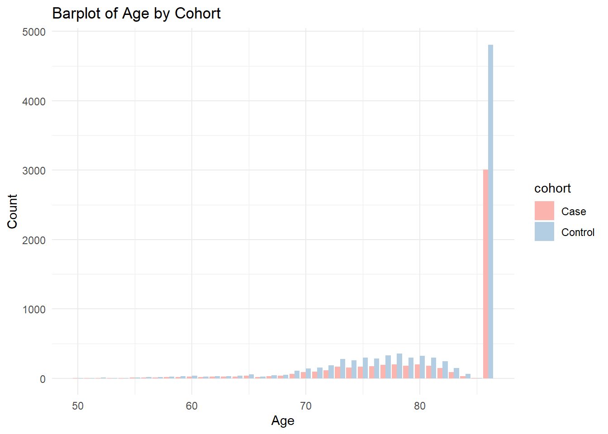
# Box plot
ggplot(data, aes(x = cohort, y = age, fill = cohort)) +
geom_boxplot() +
theme_minimal() +
scale_fill_brewer(palette = "Pastel1") +
labs(title = "Boxplot of Age by Cohort",
x = "Age",
y = "Count")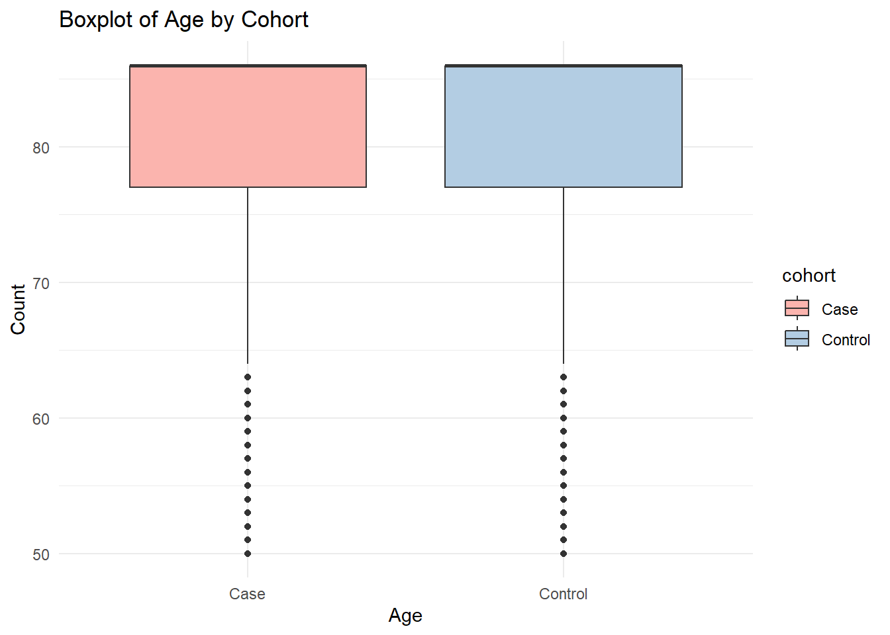
# Run T test
t.test(age ~ cohort, data = data)
Welch Two Sample t-test
data: age by cohort
t = 0.42318, df = 11584, p-value = 0.6722
alternative hypothesis: true difference in means between group Case and group Control is not equal to 0
95 percent confidence interval:
-0.1787735 0.2772167
sample estimates:
mean in group Case mean in group Control
81.00758 80.95836 There is no evidence for a signficant association between age and reception of an AD diagnosis in this data set (p > 0.05). This is likely because I made 50 years the minimum age for my cohort.
Primary Explanatory Variables
# Change reference level
data$cohort <- relevel(data$cohort, ref = "Control")
# Create plot
ggplot(data, aes(x = cohort, y = donepezil_pdc, fill = cohort)) +
geom_boxplot() +
theme_minimal() +
scale_fill_brewer(palette = "Pastel1")Warning: Removed 14122 rows containing non-finite outside the scale range
(`stat_boxplot()`).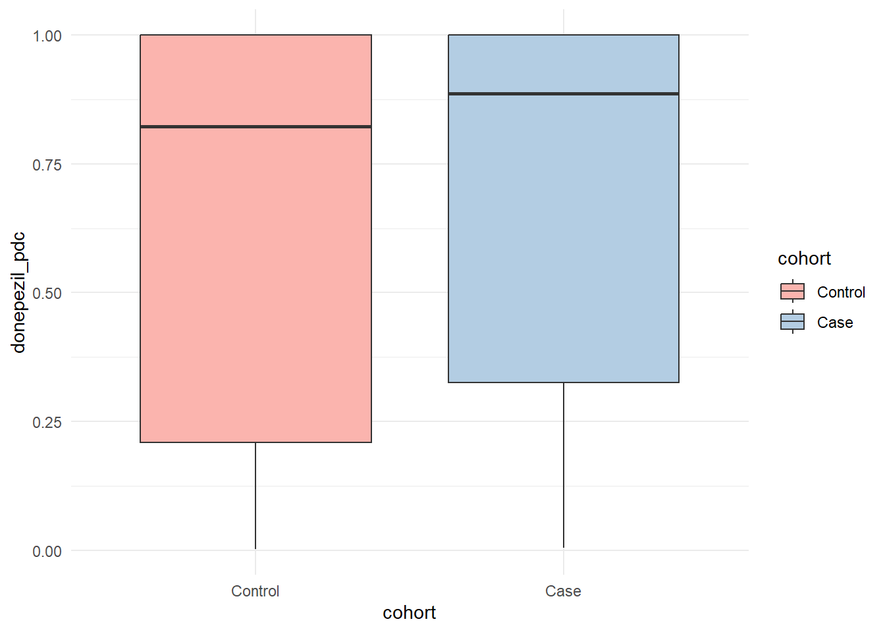
# Run t-test to assess for a group difference
t.test(donepezil_pdc ~ cohort, data = data)
Welch Two Sample t-test
data: donepezil_pdc by cohort
t = -1.37, df = 337.58, p-value = 0.1716
alternative hypothesis: true difference in means between group Control and group Case is not equal to 0
95 percent confidence interval:
-0.12361829 0.02211621
sample estimates:
mean in group Control mean in group Case
0.6297994 0.6805504 There does not appear to be a significant difference in PDC between cases and controls.
# Create plot
ggplot(data, aes(x = donepezil_100, fill = cohort)) +
geom_bar(position = "dodge") +
theme_minimal() +
scale_fill_brewer(palette = "Pastel1")# Examine table
pretty_print(data |> count(donepezil_100, cohort))| donepezil_100 | cohort | n |
|---|---|---|
| No | Control | 8971 |
| No | Case | 5439 |
| Yes | Control | 59 |
| Yes | Case | 100 |
# Test for correlation
chisq.test(table(data$donepezil_100, data$cohort))
Pearson's Chi-squared test with Yates' continuity correction
data: table(data$donepezil_100, data$cohort)
X-squared = 41.148, df = 1, p-value = 0.0000000001412# Run logistic regression
model <- glm(donepezil_100 ~ cohort, data = data, family = binomial)
# Examine summary
summary(model)
Call:
glm(formula = donepezil_100 ~ cohort, family = binomial, data = data)
Coefficients:
Estimate Std. Error z value Pr(>|z|)
(Intercept) -5.0242 0.1306 -38.472 < 0.0000000000000002 ***
cohortCase 1.0280 0.1650 6.229 0.00000000047 ***
---
Signif. codes: 0 '***' 0.001 '**' 0.01 '*' 0.05 '.' 0.1 ' ' 1
(Dispersion parameter for binomial family taken to be 1)
Null deviance: 1752.9 on 14568 degrees of freedom
Residual deviance: 1712.3 on 14567 degrees of freedom
AIC: 1716.3
Number of Fisher Scoring iterations: 7There is a significant association between 100% pdc for donepezil and receiving an AD diagnosis (p < 0.0001). Those with 100% pdc for donepezil had 2.80 times the odds of receiving and AD diagnosis compared to those who did not have a 100% donepezil pdc (z = 6.23).
# Create plot
ggplot(data, aes(x = donepezil_80, fill = cohort)) +
geom_bar(position = "dodge") +
theme_minimal() +
scale_fill_brewer(palette = "Pastel1")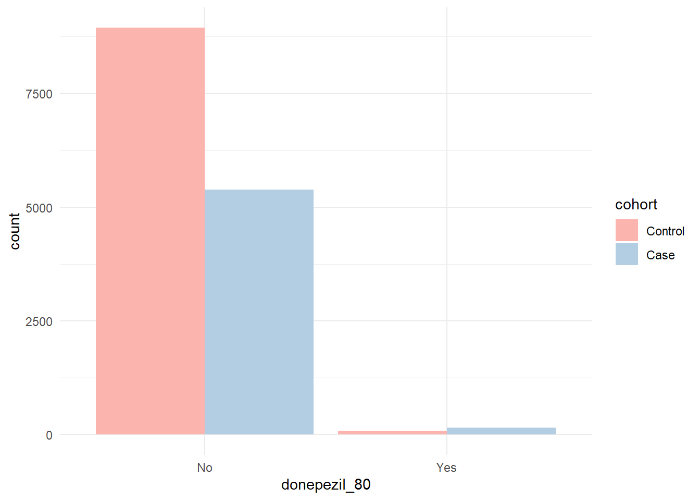
# Examine table
pretty_print(data |> count(donepezil_80, cohort))| donepezil_80 | cohort | n |
|---|---|---|
| No | Control | 8943 |
| No | Case | 5387 |
| Yes | Control | 87 |
| Yes | Case | 152 |
# Test for correlation
chisq.test(table(data$donepezil_80, data$cohort))
Pearson's Chi-squared test with Yates' continuity correction
data: table(data$donepezil_80, data$cohort)
X-squared = 66.369, df = 1, p-value = 0.000000000000000374# Run it as a logistic regression
model <- glm(donepezil_80 ~ cohort, data = data, family = binomial)
# Examine summary
summary(model)
Call:
glm(formula = donepezil_80 ~ cohort, family = binomial, data = data)
Coefficients:
Estimate Std. Error z value Pr(>|z|)
(Intercept) -4.6327 0.1077 -43.003 < 0.0000000000000002 ***
cohortCase 1.0649 0.1355 7.857 0.00000000000000395 ***
---
Signif. codes: 0 '***' 0.001 '**' 0.01 '*' 0.05 '.' 0.1 ' ' 1
(Dispersion parameter for binomial family taken to be 1)
Null deviance: 2438.7 on 14568 degrees of freedom
Residual deviance: 2373.8 on 14567 degrees of freedom
AIC: 2377.8
Number of Fisher Scoring iterations: 7There is a significant association between 80% pdc for donepezil and receiving an AD diagnosis (p < 0.0001). Those with 80% pdc for donepezil had 2.90 times the odds of receiving and AD diagnosis compared to those who did not have a 100% donepezil pdc (z = 7.86)
# Create plot
ggplot(data, aes(x = cohort, y = galantamine_pdc, fill = cohort)) +
geom_boxplot() +
theme_minimal() +
scale_fill_brewer(palette = "Pastel1")Warning: Removed 10695 rows containing non-finite outside the scale range
(`stat_boxplot()`).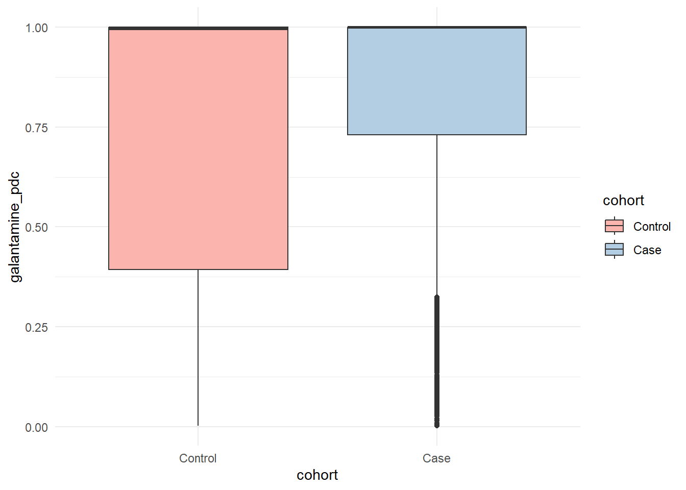
# Run t-test to assess for a group difference
t.test(galantamine_pdc ~ cohort, data = data)
Welch Two Sample t-test
data: galantamine_pdc by cohort
t = -8.0836, df = 2743.7, p-value = 0.0000000000000009334
alternative hypothesis: true difference in means between group Control and group Case is not equal to 0
95 percent confidence interval:
-0.11330820 -0.06906897
sample estimates:
mean in group Control mean in group Case
0.7251166 0.8163052 There is a statistically significant difference in the average PDC for galantamine in this data set (p < 0.0001). On average, patients who received an AD diagnosis had a mean PDC of 81.6%, compared to controls who had a mean PDC of 72.5%
This could be for several reasons: - Patients with an AD diagnosis may have caregivers who are helping them take their pills more often - Healthcare providers may be reinforcing adherence more strongly because of the AD diagnosis
# Create plot
ggplot(data, aes(x = galantamine_100, fill = cohort)) +
geom_bar(position = "dodge") +
theme_minimal() +
scale_fill_brewer(palette = "Pastel1")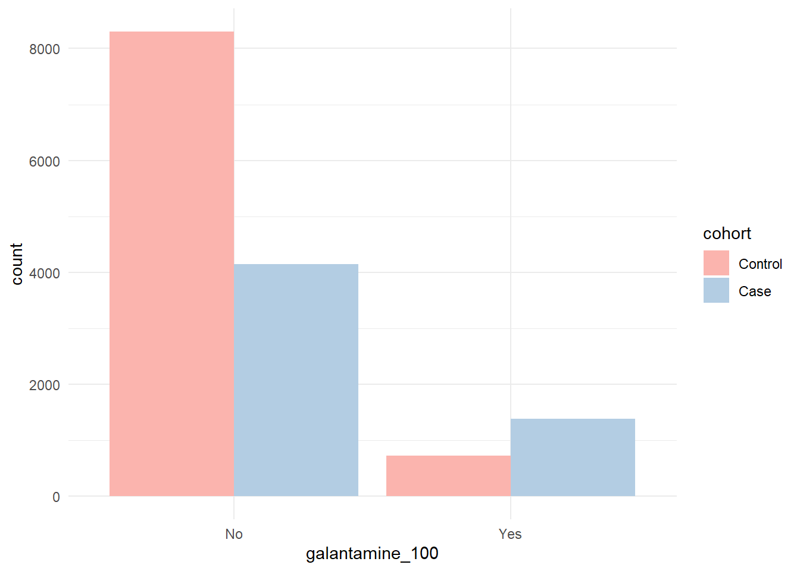
# Examine table
pretty_print(data |> count(galantamine_100, cohort))| galantamine_100 | cohort | n |
|---|---|---|
| No | Control | 8301 |
| No | Case | 4151 |
| Yes | Control | 729 |
| Yes | Case | 1388 |
# Run logistic regression
model <- glm(galantamine_100 ~ cohort, data = data, family = binomial)
# Examine model
summary(model)
Call:
glm(formula = galantamine_100 ~ cohort, family = binomial, data = data)
Coefficients:
Estimate Std. Error z value Pr(>|z|)
(Intercept) -2.43246 0.03863 -62.97 <0.0000000000000002 ***
cohortCase 1.33697 0.04953 26.99 <0.0000000000000002 ***
---
Signif. codes: 0 '***' 0.001 '**' 0.01 '*' 0.05 '.' 0.1 ' ' 1
(Dispersion parameter for binomial family taken to be 1)
Null deviance: 12077 on 14568 degrees of freedom
Residual deviance: 11303 on 14567 degrees of freedom
AIC: 11307
Number of Fisher Scoring iterations: 5There is a significant association between 100% pdc for galantamine and receiving an AD diagnosis (p < 0.0001). Those with 100% pdc for galantamine had 3.81 times the odds of receiving an AD diagnosis compared to those who did not have a 100% galantamine pdc (z = 26.99)
# Create plot
ggplot(data, aes(x = galantamine_80, fill = cohort)) +
geom_bar(position = "dodge") +
theme_minimal() +
scale_fill_brewer(palette = "Pastel1")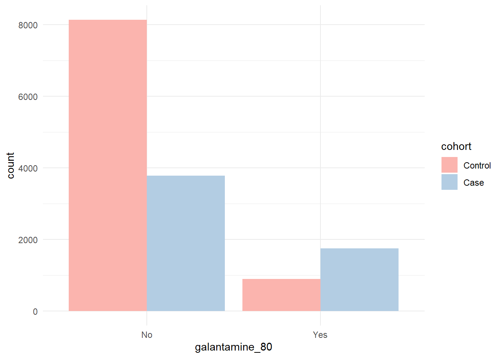
# Examine table
pretty_print(data |> count(galantamine_80, cohort))| galantamine_80 | cohort | n |
|---|---|---|
| No | Control | 8134 |
| No | Case | 3788 |
| Yes | Control | 896 |
| Yes | Case | 1751 |
# Run logistic regression
model <- glm(galantamine_80 ~ cohort, data = data, family = binomial)
# Examine model
summary(model)
Call:
glm(formula = galantamine_80 ~ cohort, family = binomial, data = data)
Coefficients:
Estimate Std. Error z value Pr(>|z|)
(Intercept) -2.20587 0.03520 -62.67 <0.0000000000000002 ***
cohortCase 1.43422 0.04554 31.49 <0.0000000000000002 ***
---
Signif. codes: 0 '***' 0.001 '**' 0.01 '*' 0.05 '.' 0.1 ' ' 1
(Dispersion parameter for binomial family taken to be 1)
Null deviance: 13810 on 14568 degrees of freedom
Residual deviance: 12752 on 14567 degrees of freedom
AIC: 12756
Number of Fisher Scoring iterations: 4There is a significant association between 80% pdc for galantamine and receiving an AD diagnosis (p < 0.0001). Those with 80% pdc for galantamine had 4.20 times the odds of receiving an AD diagnosis compared to those who did not have a 80% galantamine pdc (z = 31.49)
# Create plot
ggplot(data, aes(x = cohort, y = rivastigmine_pdc, fill = cohort)) +
geom_boxplot() +
theme_minimal() +
scale_fill_brewer(palette = "Pastel1")Warning: Removed 14440 rows containing non-finite outside the scale range
(`stat_boxplot()`).
# Run t-test to assess for a group difference
t.test(rivastigmine_pdc ~ cohort, data = data)
Welch Two Sample t-test
data: rivastigmine_pdc by cohort
t = -1.789, df = 71.054, p-value = 0.07788
alternative hypothesis: true difference in means between group Control and group Case is not equal to 0
95 percent confidence interval:
-0.26870225 0.01455578
sample estimates:
mean in group Control mean in group Case
0.6401350 0.7672082 The t-test was not significant, although there is a trend for patients who received an AD diagnosis to have a higher rivastigmine_pdc.
# Create plot
ggplot(data, aes(x = rivastigmine_100, fill = cohort)) +
geom_bar(position = "dodge") +
theme_minimal() +
scale_fill_brewer(palette = "Pastel1")
# Examine table
pretty_print(data |> count(rivastigmine_100, cohort))| rivastigmine_100 | cohort | n |
|---|---|---|
| No | Control | 9013 |
| No | Case | 5490 |
| Yes | Control | 17 |
| Yes | Case | 49 |
# Run logistic regression
model <- glm(rivastigmine_100 ~ cohort, data = data, family = binomial)
# Examine model
summary(model)
Call:
glm(formula = rivastigmine_100 ~ cohort, family = binomial, data = data)
Coefficients:
Estimate Std. Error z value Pr(>|z|)
(Intercept) -6.2732 0.2428 -25.841 < 0.0000000000000002 ***
cohortCase 1.5543 0.2820 5.512 0.0000000355 ***
---
Signif. codes: 0 '***' 0.001 '**' 0.01 '*' 0.05 '.' 0.1 ' ' 1
(Dispersion parameter for binomial family taken to be 1)
Null deviance: 844.10 on 14568 degrees of freedom
Residual deviance: 808.21 on 14567 degrees of freedom
AIC: 812.21
Number of Fisher Scoring iterations: 9There is a significant association between 100% pdc for rivastigmine and receiving an AD diagnosis (p < 0.0001). Those with 100% pdc for rivastigmine had 4.73 times the odds of receiving an AD diagnosis compared to those who did not have a 100% rivastigmine pdc (z = 5.51)
# Create plot
ggplot(data, aes(x = rivastigmine_80, fill = cohort)) +
geom_bar(position = "dodge") +
theme_minimal() +
scale_fill_brewer(palette = "Pastel1")# Examine table
pretty_print(data |> count(rivastigmine_80, cohort))| rivastigmine_80 | cohort | n |
|---|---|---|
| No | Control | 9009 |
| No | Case | 5481 |
| Yes | Control | 21 |
| Yes | Case | 58 |
# Run logistic regression
model <- glm(rivastigmine_80 ~ cohort, data = data, family = binomial)
# Examine model
summary(model)
Call:
glm(formula = rivastigmine_80 ~ cohort, family = binomial, data = data)
Coefficients:
Estimate Std. Error z value Pr(>|z|)
(Intercept) -6.0615 0.2184 -27.751 < 0.0000000000000002 ***
cohortCase 1.5129 0.2552 5.928 0.00000000307 ***
---
Signif. codes: 0 '***' 0.001 '**' 0.01 '*' 0.05 '.' 0.1 ' ' 1
(Dispersion parameter for binomial family taken to be 1)
Null deviance: 981.89 on 14568 degrees of freedom
Residual deviance: 940.88 on 14567 degrees of freedom
AIC: 944.88
Number of Fisher Scoring iterations: 8There is a significant association between 80% pdc for rivastigmine and receiving an AD diagnosis (p < 0.0001). Those with 80% pdc for rivastigmine had 4.54 times the odds of receiving an AD diagnosis compared to those who did not have a 80% rivastigmine pdc (z = 5.93)
# Create plot
ggplot(data, aes(x = cohort, y = memantine_pdc, fill = cohort)) +
geom_boxplot() +
theme_minimal() +
scale_fill_brewer(palette = "Pastel1")Warning: Removed 12849 rows containing non-finite outside the scale range
(`stat_boxplot()`).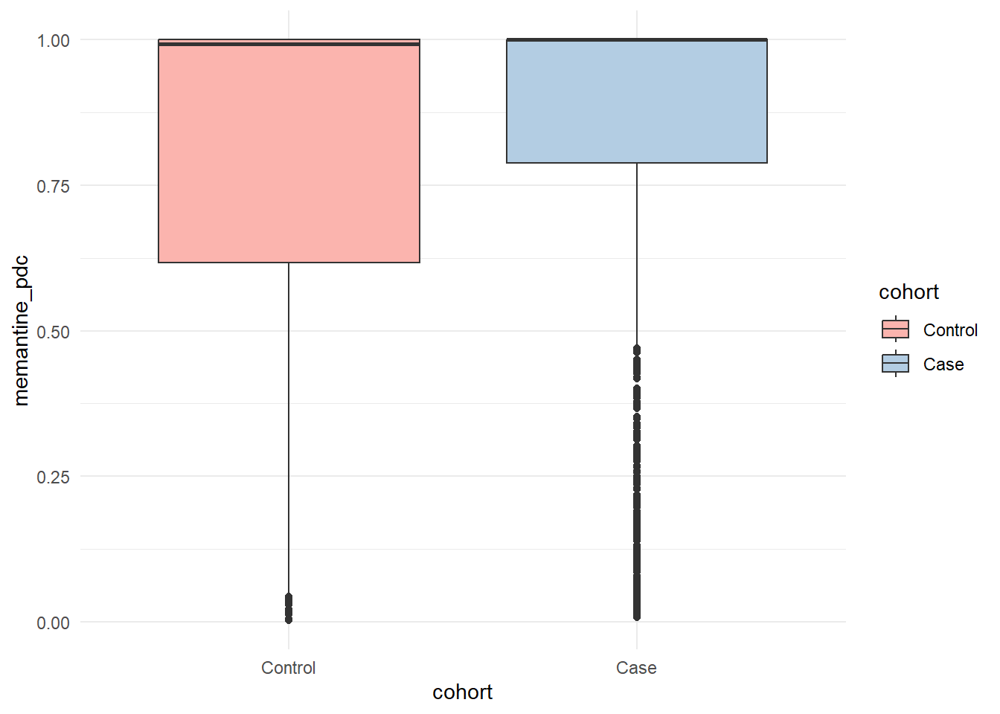
# Run t-test to assess for a group difference
t.test(memantine_pdc ~ cohort, data = data)
Welch Two Sample t-test
data: memantine_pdc by cohort
t = -3.2684, df = 1060.6, p-value = 0.001116
alternative hypothesis: true difference in means between group Control and group Case is not equal to 0
95 percent confidence interval:
-0.08508241 -0.02124756
sample estimates:
mean in group Control mean in group Case
0.7720331 0.8251981 There is a significant difference in memantine_pdc for those who received an AD diagnosis and those who did not (p = 0.001). On average, patients who received an AD diagnosis had a mean memantine_pdc of 82.5%, and those who did not receive an AD diagnosis had a mean memantine_pdc of 77.2%.
# Create plot
ggplot(data, aes(x = memantine_100, fill = cohort)) +
geom_bar(position = "dodge") +
theme_minimal() +
scale_fill_brewer(palette = "Pastel1")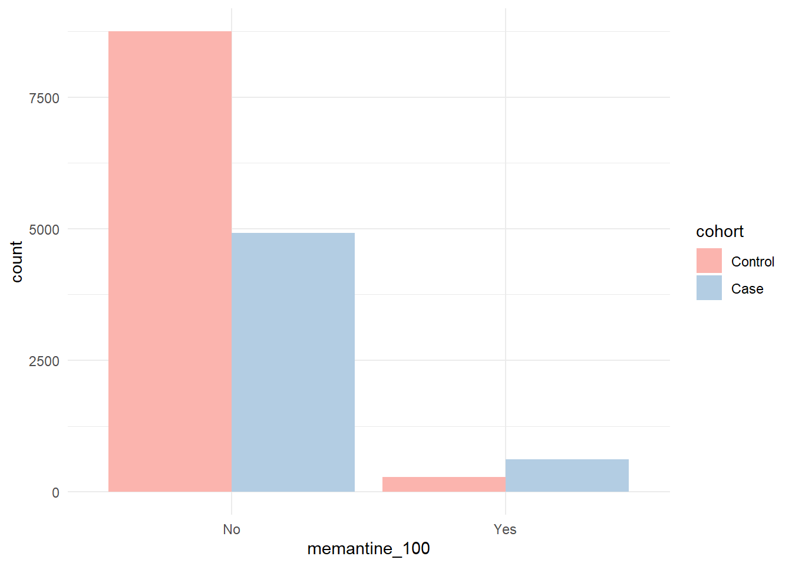
# Examine table
pretty_print(data |> count(memantine_100, cohort))| memantine_100 | cohort | n |
|---|---|---|
| No | Control | 8747 |
| No | Case | 4921 |
| Yes | Control | 283 |
| Yes | Case | 618 |
# Run logistic regression
model <- glm(memantine_100 ~ cohort, data = data, family = binomial)
# Examine model
summary(model)
Call:
glm(formula = memantine_100 ~ cohort, family = binomial, data = data)
Coefficients:
Estimate Std. Error z value Pr(>|z|)
(Intercept) -3.43102 0.06040 -56.81 <0.0000000000000002 ***
cohortCase 1.35624 0.07395 18.34 <0.0000000000000002 ***
---
Signif. codes: 0 '***' 0.001 '**' 0.01 '*' 0.05 '.' 0.1 ' ' 1
(Dispersion parameter for binomial family taken to be 1)
Null deviance: 6760.3 on 14568 degrees of freedom
Residual deviance: 6392.0 on 14567 degrees of freedom
AIC: 6396
Number of Fisher Scoring iterations: 6There is a significant association between 100% pdc for memantine and receiving an AD diagnosis (p < 0.0001). Those with 100% pdc for memantine had 3.88 times the odds of receiving an AD diagnosis compared to those who did not have a 100% memantine pdc (z = 18.34)
# Create plot
ggplot(data, aes(x = memantine_80, fill = cohort)) +
geom_bar(position = "dodge") +
theme_minimal() +
scale_fill_brewer(palette = "Pastel1")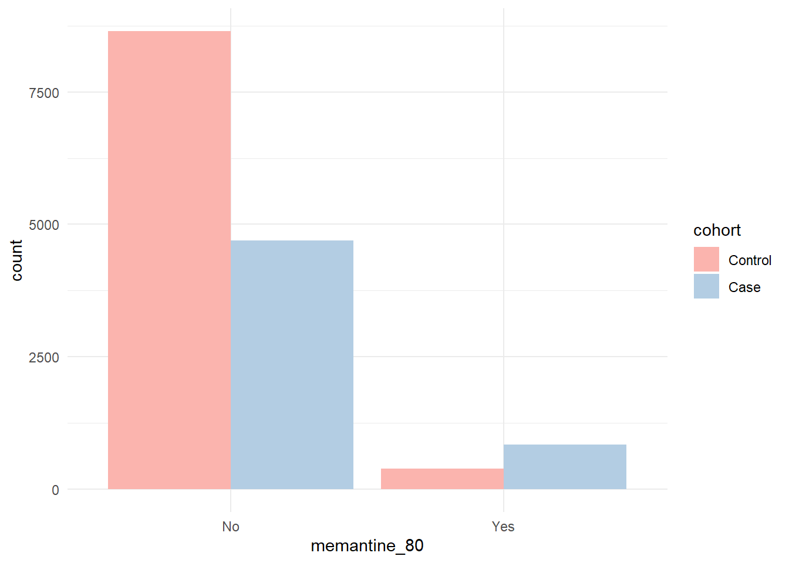
# Examine table
pretty_print(data |> count(memantine_80, cohort))| memantine_80 | cohort | n |
|---|---|---|
| No | Control | 8644 |
| No | Case | 4696 |
| Yes | Control | 386 |
| Yes | Case | 843 |
# Run logistic regression
model <- glm(memantine_80 ~ cohort, data = data, family = binomial)
# Examine model
summary(model)
Call:
glm(formula = memantine_80 ~ cohort, family = binomial, data = data)
Coefficients:
Estimate Std. Error z value Pr(>|z|)
(Intercept) -3.10878 0.05201 -59.77 <0.0000000000000002 ***
cohortCase 1.39128 0.06407 21.72 <0.0000000000000002 ***
---
Signif. codes: 0 '***' 0.001 '**' 0.01 '*' 0.05 '.' 0.1 ' ' 1
(Dispersion parameter for binomial family taken to be 1)
Null deviance: 8429.2 on 14568 degrees of freedom
Residual deviance: 7913.7 on 14567 degrees of freedom
AIC: 7917.7
Number of Fisher Scoring iterations: 5There is a significant association between 80% pdc for memantine and receiving an AD diagnosis (p < 0.0001). Those with 80% pdc for memantine had 4.02 times the odds of receiving an AD diagnosis compared to those who did not have a 80% memantine pdc (z = 21.72)
Summary
Covariates
There was a significant association between pill burden and cohort, with patients who received an AD diagnosis having a lower average pill burden.
Region was a significant predictor of the odds of having an AD diagnosis, with those in the West having a lower odds of receiving an AD diagnosis than those in the S and Midwest.
There is a significant association between depression and receiving an AD diagnosis, with patients with depression having a higher odds of receiving an AD diagnosis.
Primary Explanatory Variables
Patients with at least 80% or 100% Proportion of Days Covered (PDC) for each drug exhibited significantly higher odds of receiving an Alzheimer’s Disease (AD) diagnosis. This association is likely attributable to external factors influencing medication adherence rather than a causal relationship between drug use and AD diagnosis.
Potential explanations include:
- Caregiver Support: Individuals diagnosed with AD often receive assistance from caregivers, which may contribute to higher medication adherence.
- Healthcare Reinforcement: Healthcare providers may place greater emphasis on adherence for patients with an established AD diagnosis, leading to more consistent medication use.
Thus, these findings do not suggest that taking these medications increases the likelihood of receiving an AD diagnosis. Instead, the observed association is likely driven by adherence-promoting factors among patients already diagnosed with AD.
Analysis
Set Reference Levels
# Change reference level
data$cohort <- relevel(data$cohort, ref = "Control")
# # Convert cohort to numeric for the logistic regression
# data$cohort <- ifelse(data$cohort == "Case", 1, 0) # Convert to numeric (binary)Analysis I
This first analysis will be to examine what happens if we use the pdc_100 variable for each drug as an independent predictor. This will allow us to see the contribution of each drug by itself to the odds of having an AD diagnosis.
We will then compare differences between these drugs by including drug use as a categorical variable, with each individual drug as a separate level.
We will first start by fitting the full model.
# Fit full model
model1_full <- glm(cohort ~ donepezil_100 + galantamine_100 + rivastigmine_100 + memantine_100 +
der_sex + insurance_new + parkinsons + pill_burden + pat_region +
depression + age + cqci, family = "binomial", data = data)
# Examine model
summary(model1_full)
Call:
glm(formula = cohort ~ donepezil_100 + galantamine_100 + rivastigmine_100 +
memantine_100 + der_sex + insurance_new + parkinsons + pill_burden +
pat_region + depression + age + cqci, family = "binomial",
data = data)
Coefficients:
Estimate Std. Error z value Pr(>|z|)
(Intercept) -0.729469 0.225115 -3.240 0.001193 **
donepezil_100Yes 1.075178 0.169940 6.327 0.0000000002503 ***
galantamine_100Yes 1.284136 0.051018 25.170 < 0.0000000000000002 ***
rivastigmine_100Yes 1.525131 0.289639 5.266 0.0000001397058 ***
memantine_100Yes 1.074971 0.077970 13.787 < 0.0000000000000002 ***
der_sex 0.049556 0.036825 1.346 0.178402
insurance_newG -0.085532 0.037629 -2.273 0.023022 *
insurance_newO -0.443373 0.549160 -0.807 0.419455
parkinsonsYes 0.108520 0.263194 0.412 0.680106
pill_burden -0.018019 0.001908 -9.446 < 0.0000000000000002 ***
pat_regionMissing -0.037176 0.187362 -0.198 0.842716
pat_regionMW 0.225673 0.052609 4.290 0.0000178944229 ***
pat_regionNE 0.153182 0.057909 2.645 0.008163 **
pat_regionS 0.131502 0.061185 2.149 0.031614 *
depressionYes 0.303998 0.045441 6.690 0.0000000000223 ***
age -0.000398 0.002679 -0.149 0.881915
cqci 0.022158 0.006061 3.656 0.000257 ***
---
Signif. codes: 0 '***' 0.001 '**' 0.01 '*' 0.05 '.' 0.1 ' ' 1
(Dispersion parameter for binomial family taken to be 1)
Null deviance: 19352 on 14568 degrees of freedom
Residual deviance: 18133 on 14552 degrees of freedom
AIC: 18167
Number of Fisher Scoring iterations: 4Examine Multicollinearity
# Examine multicollinearity
vif(model1_full, type = 'predictor')Warning in vif.lm(model1_full, type = "predictor"): type = 'predictor' is available only for unweighted linear models;
type = 'terms' will be used GVIF Df GVIF^(1/(2*Df))
donepezil_100 1.005945 1 1.002968
galantamine_100 1.021077 1 1.010484
rivastigmine_100 1.003427 1 1.001712
memantine_100 1.017743 1 1.008832
der_sex 1.025158 1 1.012501
insurance_new 1.080772 2 1.019609
parkinsons 1.002162 1 1.001080
pill_burden 1.243361 1 1.115061
pat_region 1.103528 4 1.012390
depression 1.018815 1 1.009364
age 1.033882 1 1.016800
cqci 1.248394 1 1.117316# Perform backward elimination based on BIC
n <- nrow(data) # Total number of observations
model1_bic <- step(model1_full, direction = "backward", k = log(n))Start: AIC=18295.77
cohort ~ donepezil_100 + galantamine_100 + rivastigmine_100 +
memantine_100 + der_sex + insurance_new + parkinsons + pill_burden +
pat_region + depression + age + cqci
Df Deviance AIC
- pat_region 4 18153 18277
- insurance_new 2 18139 18282
- age 1 18133 18286
- parkinsons 1 18133 18286
- der_sex 1 18135 18288
<none> 18133 18296
- cqci 1 18146 18300
- rivastigmine_100 1 18165 18318
- donepezil_100 1 18174 18328
- depression 1 18177 18331
- pill_burden 1 18224 18377
- memantine_100 1 18334 18487
- galantamine_100 1 18796 18950
Step: AIC=18277.34
cohort ~ donepezil_100 + galantamine_100 + rivastigmine_100 +
memantine_100 + der_sex + insurance_new + parkinsons + pill_burden +
depression + age + cqci
Df Deviance AIC
- insurance_new 2 18155 18261
- age 1 18153 18268
- parkinsons 1 18153 18268
- der_sex 1 18155 18270
<none> 18153 18277
- cqci 1 18169 18284
- rivastigmine_100 1 18185 18300
- donepezil_100 1 18195 18310
- depression 1 18199 18314
- pill_burden 1 18250 18365
- memantine_100 1 18353 18468
- galantamine_100 1 18819 18934
Step: AIC=18260.46
cohort ~ donepezil_100 + galantamine_100 + rivastigmine_100 +
memantine_100 + der_sex + parkinsons + pill_burden + depression +
age + cqci
Df Deviance AIC
- age 1 18155 18251
- parkinsons 1 18155 18251
- der_sex 1 18157 18253
<none> 18155 18261
- cqci 1 18170 18266
- rivastigmine_100 1 18187 18283
- donepezil_100 1 18197 18293
- depression 1 18201 18297
- pill_burden 1 18252 18347
- memantine_100 1 18356 18451
- galantamine_100 1 18822 18918
Step: AIC=18250.95
cohort ~ donepezil_100 + galantamine_100 + rivastigmine_100 +
memantine_100 + der_sex + parkinsons + pill_burden + depression +
cqci
Df Deviance AIC
- parkinsons 1 18155 18242
- der_sex 1 18157 18243
<none> 18155 18251
- cqci 1 18170 18257
- rivastigmine_100 1 18187 18274
- donepezil_100 1 18197 18284
- depression 1 18201 18287
- pill_burden 1 18253 18339
- memantine_100 1 18356 18442
- galantamine_100 1 18822 18909
Step: AIC=18241.53
cohort ~ donepezil_100 + galantamine_100 + rivastigmine_100 +
memantine_100 + der_sex + pill_burden + depression + cqci
Df Deviance AIC
- der_sex 1 18157 18234
<none> 18155 18242
- cqci 1 18170 18247
- rivastigmine_100 1 18187 18264
- donepezil_100 1 18197 18274
- depression 1 18201 18278
- pill_burden 1 18253 18329
- memantine_100 1 18356 18432
- galantamine_100 1 18823 18899
Step: AIC=18233.8
cohort ~ donepezil_100 + galantamine_100 + rivastigmine_100 +
memantine_100 + pill_burden + depression + cqci
Df Deviance AIC
<none> 18157 18234
- cqci 1 18171 18238
- rivastigmine_100 1 18189 18256
- donepezil_100 1 18199 18266
- depression 1 18204 18271
- pill_burden 1 18253 18320
- memantine_100 1 18357 18424
- galantamine_100 1 18824 18891# Examine model
summary(model1_bic)
Call:
glm(formula = cohort ~ donepezil_100 + galantamine_100 + rivastigmine_100 +
memantine_100 + pill_burden + depression + cqci, family = "binomial",
data = data)
Coefficients:
Estimate Std. Error z value Pr(>|z|)
(Intercept) -0.631161 0.036637 -17.227 < 0.0000000000000002 ***
donepezil_100Yes 1.078811 0.169821 6.353 0.0000000002116 ***
galantamine_100Yes 1.284631 0.050917 25.230 < 0.0000000000000002 ***
rivastigmine_100Yes 1.525546 0.289534 5.269 0.0000001371927 ***
memantine_100Yes 1.071904 0.077873 13.765 < 0.0000000000000002 ***
pill_burden -0.018143 0.001876 -9.669 < 0.0000000000000002 ***
depressionYes 0.311393 0.045338 6.868 0.0000000000065 ***
cqci 0.022157 0.005905 3.752 0.000175 ***
---
Signif. codes: 0 '***' 0.001 '**' 0.01 '*' 0.05 '.' 0.1 ' ' 1
(Dispersion parameter for binomial family taken to be 1)
Null deviance: 19352 on 14568 degrees of freedom
Residual deviance: 18157 on 14561 degrees of freedom
AIC: 18173
Number of Fisher Scoring iterations: 4# Examine 95% CIs
pretty_print(confint(model1_bic))Waiting for profiling to be done...| 2.5 % | 97.5 % | |
|---|---|---|
| (Intercept) | -0.7030713 | -0.5594478 |
| donepezil_100Yes | 0.7492352 | 1.4162693 |
| galantamine_100Yes | 1.1851546 | 1.3847731 |
| rivastigmine_100Yes | 0.9774582 | 2.1197303 |
| memantine_100Yes | 0.9201584 | 1.2255289 |
| pill_burden | -0.0218306 | -0.0144751 |
| depressionYes | 0.2224346 | 0.4001721 |
| cqci | 0.0105747 | 0.0337237 |
BIC selected a final model with the donepezil_100, galantamine_100, rivastigmine_100, memantine_100, pill_burden, depression, and cqci as predictor variables.
Patients who had a 100% PDC for donepezil had 2.94 times the odds of having had an AD diagnosis compared to those who did not (p < 0.0001, z = 6.35).
Patients who had a 100% pdc for galantamine had 3.61 times the odds of having had an AD diagnosis compared to those who did not (p < 0.0001, z = 25.23).
Patients who had a 100% pdc for rivastigmine had 4.60 times the odds of having had an AD diagnosis compared to those who did not (p < 0.0001, z = 5.27).
Patients who had a 100% pdc for memantine had 2.92 times the odds of having had an AD diagnosis compared to those who did not (p < 0.0001, z = 13.77).
Pill burden was a significant predictor of the odds of ever having had an AD diagnosis (p < 0.0001). On average, every 1 unit increase in pill burden was associated with 0.98 times the odds of ever having had an AD diagnosis.
Depression was a significant predictor of the odds of ever having had an AD diagnoisis (p < 0.0001). On average, those with depression had 1.37 times the odds of ever having had an AD diagnosis (z = 6.87).
Charlson Comorbidity Score was a significant predictor of the odds of ever having had an AD diagnosis (p < 0.0001). On average, every 1 point score increase in the Charlson Comorbidity Score was associated with 1.02 times the odds of ever having had an AD diagnosis (z = 3.76).
Every variable in the final model was a significant predictor of the odds of ever having had an AD diagnosis.
Patients who had a 100% PDC for rivastigmine had the highest odds of receiving an AD diagnosis, followed by galantamine, and donepezil/memantine which were tied.
Pill burden was negatively associated with the outcome, such that increases in pill burden were associated with a lower odds of receiving AD.
Depression and Charlson Comoridity scale were positively associated with the outcome, such that increases in either score were associated with an increased odds of receiving an AD diagnosis.
Analysis II
To compare the odds of receiving an Alzheimer’s disease (AD) diagnosis across different medications, I will create a categorical variable representing drug usage. Additionally, I will exclude patients who did not primarily adhere to any single medication.
Create Categorical Variable and Filter
# Create new variable
data <- data |>
mutate(drug = case_when(
donepezil_100 == "Yes" ~ "Donepezil",
galantamine_100 == "Yes" ~ "Galantamine",
rivastigmine_100 == "Yes" ~ "Rivastigmine",
memantine_100 == "Yes" ~ "Memantine",
TRUE ~ "Other"
))
# Create new variable
data <- data |>
mutate(drug_80 = case_when(
donepezil_80 == "Yes" ~ "Donepezil",
galantamine_80 == "Yes" ~ "Galantamine",
rivastigmine_80 == "Yes" ~ "Rivastigmine",
memantine_80 == "Yes" ~ "Memantine",
TRUE ~ "Other"
))
# Filter out those without 100% pdc to any drug.
data_filter <- data |>
filter(drug != "Other")
data_filter_80 <- data |>
filter(drug != "Other")# Run Logistic Regression
model2_full <- glm(cohort ~ drug + der_sex + insurance_new + parkinsons + pill_burden + pat_region +
depression + age + cqci, family = "binomial", data = data_filter)
# Examine model
summary(model2_full)
Call:
glm(formula = cohort ~ drug + der_sex + insurance_new + parkinsons +
pill_burden + pat_region + depression + age + cqci, family = "binomial",
data = data_filter)
Coefficients:
Estimate Std. Error z value Pr(>|z|)
(Intercept) 2.840454 0.570632 4.978 0.000000643 ***
drugGalantamine 0.084801 0.172075 0.493 0.622142
drugMemantine 0.080921 0.191651 0.422 0.672855
drugRivastigmine 0.611426 0.349151 1.751 0.079915 .
der_sex 0.005778 0.082781 0.070 0.944358
insurance_newG 0.112304 0.086885 1.293 0.196166
insurance_newO 0.560106 1.181396 0.474 0.635425
parkinsonsYes -0.380236 0.650856 -0.584 0.559080
pill_burden -0.015642 0.004569 -3.424 0.000618 ***
pat_regionMissing -0.101045 0.420874 -0.240 0.810266
pat_regionMW 0.091758 0.120363 0.762 0.445854
pat_regionNE 0.188620 0.137411 1.373 0.169857
pat_regionS 0.107336 0.128571 0.835 0.403810
depressionYes 0.153009 0.102749 1.489 0.136446
age -0.027657 0.006411 -4.314 0.000016019 ***
cqci 0.009242 0.014657 0.631 0.528332
---
Signif. codes: 0 '***' 0.001 '**' 0.01 '*' 0.05 '.' 0.1 ' ' 1
(Dispersion parameter for binomial family taken to be 1)
Null deviance: 3628.0 on 2815 degrees of freedom
Residual deviance: 3585.1 on 2800 degrees of freedom
AIC: 3617.1
Number of Fisher Scoring iterations: 4# Perform backward elimination based on BIC
n <- nrow(data_filter) # Total number of observations
model2_bic <- step(model2_full, direction = "backward", k = log(n),
scope = list(lower = ~ drug, upper = model2_full))Start: AIC=3712.17
cohort ~ drug + der_sex + insurance_new + parkinsons + pill_burden +
pat_region + depression + age + cqci
Df Deviance AIC
- pat_region 4 3587.3 3682.6
- insurance_new 2 3586.9 3698.1
- der_sex 1 3585.1 3704.2
- parkinsons 1 3585.4 3704.6
- cqci 1 3585.5 3704.6
- depression 1 3587.3 3706.5
<none> 3585.1 3712.2
- pill_burden 1 3596.8 3715.9
- age 1 3604.5 3723.6
Step: AIC=3682.58
cohort ~ drug + der_sex + insurance_new + parkinsons + pill_burden +
depression + age + cqci
Df Deviance AIC
- insurance_new 2 3590.2 3669.6
- der_sex 1 3587.3 3674.7
- parkinsons 1 3587.6 3675.0
- cqci 1 3587.7 3675.1
- depression 1 3589.6 3677.0
<none> 3587.3 3682.6
- pill_burden 1 3599.7 3687.1
- age 1 3607.1 3694.4
Step: AIC=3669.61
cohort ~ drug + der_sex + parkinsons + pill_burden + depression +
age + cqci
Df Deviance AIC
- der_sex 1 3590.2 3661.7
- parkinsons 1 3590.5 3662.0
- cqci 1 3590.9 3662.4
- depression 1 3592.6 3664.1
<none> 3590.2 3669.6
- pill_burden 1 3602.6 3674.0
- age 1 3610.8 3682.3
Step: AIC=3661.72
cohort ~ drug + parkinsons + pill_burden + depression + age +
cqci
Df Deviance AIC
- parkinsons 1 3590.6 3654.2
- cqci 1 3590.9 3654.5
- depression 1 3592.7 3656.2
<none> 3590.2 3661.7
- pill_burden 1 3602.6 3666.1
- age 1 3610.8 3674.4
Step: AIC=3654.15
cohort ~ drug + pill_burden + depression + age + cqci
Df Deviance AIC
- cqci 1 3591.3 3646.9
- depression 1 3593.0 3648.6
<none> 3590.6 3654.2
- pill_burden 1 3602.9 3658.5
- age 1 3611.0 3666.6
Step: AIC=3646.89
cohort ~ drug + pill_burden + depression + age
Df Deviance AIC
- depression 1 3593.8 3641.4
<none> 3591.3 3646.9
- pill_burden 1 3603.7 3651.3
- age 1 3611.1 3658.7
Step: AIC=3641.44
cohort ~ drug + pill_burden + age
Df Deviance AIC
<none> 3593.8 3641.4
- pill_burden 1 3605.4 3645.2
- age 1 3613.9 3653.6# Examine model
summary(model2_bic)
Call:
glm(formula = cohort ~ drug + pill_burden + age, family = "binomial",
data = data_filter)
Coefficients:
Estimate Std. Error z value Pr(>|z|)
(Intercept) 3.050818 0.554285 5.504 0.0000000371 ***
drugGalantamine 0.085064 0.171488 0.496 0.619871
drugMemantine 0.087388 0.190766 0.458 0.646889
drugRivastigmine 0.591423 0.347996 1.700 0.089223 .
pill_burden -0.013605 0.003971 -3.426 0.000612 ***
age -0.027851 0.006339 -4.394 0.0000111488 ***
---
Signif. codes: 0 '***' 0.001 '**' 0.01 '*' 0.05 '.' 0.1 ' ' 1
(Dispersion parameter for binomial family taken to be 1)
Null deviance: 3628.0 on 2815 degrees of freedom
Residual deviance: 3593.8 on 2810 degrees of freedom
AIC: 3605.8
Number of Fisher Scoring iterations: 4# Get 95% CI
pretty_print(confint(model2_bic))Waiting for profiling to be done...| 2.5 % | 97.5 % | |
|---|---|---|
| (Intercept) | 1.9755635 | 4.1493668 |
| drugGalantamine | -0.2557801 | 0.4177180 |
| drugMemantine | -0.2899042 | 0.4589123 |
| drugRivastigmine | -0.0708826 | 1.3013854 |
| pill_burden | -0.0213870 | -0.0058120 |
| age | -0.0404079 | -0.0155481 |
Change Reference Level
# Make drug a factor
data_filter$drug <- factor(data_filter$drug)
# Change reference level
data_filter$drug <- relevel(data_filter$drug, ref = "Galantamine")
# Re-run model
model2_red <- glm(cohort ~ drug + pill_burden + age, family = "binomial", data = data_filter)
# Examine model
summary(model2_red)
Call:
glm(formula = cohort ~ drug + pill_burden + age, family = "binomial",
data = data_filter)
Coefficients:
Estimate Std. Error z value Pr(>|z|)
(Intercept) 3.135882 0.527354 5.946 0.00000000274 ***
drugDonepezil -0.085064 0.171488 -0.496 0.619871
drugMemantine 0.002324 0.106151 0.022 0.982534
drugRivastigmine 0.506359 0.309582 1.636 0.101919
pill_burden -0.013605 0.003971 -3.426 0.000612 ***
age -0.027851 0.006339 -4.394 0.00001114876 ***
---
Signif. codes: 0 '***' 0.001 '**' 0.01 '*' 0.05 '.' 0.1 ' ' 1
(Dispersion parameter for binomial family taken to be 1)
Null deviance: 3628.0 on 2815 degrees of freedom
Residual deviance: 3593.8 on 2810 degrees of freedom
AIC: 3605.8
Number of Fisher Scoring iterations: 4# Get 95% CI
pretty_print(confint(model2_red))Waiting for profiling to be done...| 2.5 % | 97.5 % | |
|---|---|---|
| (Intercept) | 2.1136778 | 4.1818771 |
| drugDonepezil | -0.4177180 | 0.2557801 |
| drugMemantine | -0.2044878 | 0.2118349 |
| drugRivastigmine | -0.0739387 | 1.1491700 |
| pill_burden | -0.0213870 | -0.0058120 |
| age | -0.0404079 | -0.0155481 |
Change Reference Level
# Change reference level
data_filter$drug <- relevel(data_filter$drug, ref = "Rivastigmine")
# Re-run model
model2_red <- glm(cohort ~ drug + pill_burden + age, family = "binomial", data = data_filter)
# Examine model
summary(model2_red)
Call:
glm(formula = cohort ~ drug + pill_burden + age, family = "binomial",
data = data_filter)
Coefficients:
Estimate Std. Error z value Pr(>|z|)
(Intercept) 3.642241 0.597924 6.091 0.00000000112 ***
drugGalantamine -0.506359 0.309582 -1.636 0.101919
drugDonepezil -0.591423 0.347996 -1.700 0.089223 .
drugMemantine -0.504035 0.320799 -1.571 0.116140
pill_burden -0.013605 0.003971 -3.426 0.000612 ***
age -0.027851 0.006339 -4.394 0.00001114876 ***
---
Signif. codes: 0 '***' 0.001 '**' 0.01 '*' 0.05 '.' 0.1 ' ' 1
(Dispersion parameter for binomial family taken to be 1)
Null deviance: 3628.0 on 2815 degrees of freedom
Residual deviance: 3593.8 on 2810 degrees of freedom
AIC: 3605.8
Number of Fisher Scoring iterations: 4# Get confidence intervals
pretty_print(confint(model2_red))Waiting for profiling to be done...| 2.5 % | 97.5 % | |
|---|---|---|
| (Intercept) | 2.4879855 | 4.8341539 |
| drugGalantamine | -1.1491700 | 0.0739387 |
| drugDonepezil | -1.3013854 | 0.0708826 |
| drugMemantine | -1.1663086 | 0.1002543 |
| pill_burden | -0.0213870 | -0.0058120 |
| age | -0.0404079 | -0.0155481 |
BIC selected a final model including drug (which was forced in), pill_burden, and age.
There was not sufficient evidence for a significant difference between drug categories (All unadjusted p’s > 0.05).
pill_burden was a significant predictor of the odds of receiving an AD diagnosis (p < 0.0001). Every 1 point increase in pill_burden was associated with 0.99 times the odds of receiving an AD diagnosis (95% CI: 0.98, 0.99).
age was a significant predictor of the odds of receiving an AD diagnosis (p < 0.0001). Every 1 year increase in age was associated with 0.97 times the odds of receiving an AD diagnosis (95% CI: 0.96, 0.98).
The odds of receiving an AD diagnosis did not differ across medications.
Pill burden and age were negatively associated with the odds of receiving an AD diagnosis, such that increases in pill burden and age were associated with a lower odds of receiving an AD diagnosis.
Results
This analysis was conducted in two parts: the first to assess the relationship between use of the most common AD medications and the likelihood of receiving an AD diagnosis. The second to compare if there were differences in the odds of receiving an AD diagnosis between these medications.
Likelihood of Receiving an AD diagnosis
Primary Explanatory Variable
Patients with 100% PDC adherence to donepezil had 2.94 times higher odds of an Alzheimer’s disease (AD) diagnosis compared to non-adherent individuals (p < 0.0001, 95% CI: 2.12, 4.14).
For galantamine, full adherence was associated with 3.61 times the odds of an AD diagnosis (p < 0.0001, 95% CI: 3.29, 3.97).
Patients who adhered fully to rivastigmine had the highest odds, at 4.60 times greater likelihood of an AD diagnosis (p < 0.0001, 95% CI: 2.66, 8.33).
Similarly, those with 100% PDC for memantine exhibited 2.92 times the odds of an AD diagnosis (p < 0.0001, 95% CI: 2.50, 3.42).
Covariates
Pill burden was a highly significant predictor of an Alzheimer’s disease (AD) diagnosis (p < 0.0001). Each 1-unit increase in pill burden was associated with a 2% lower odds of having an AD diagnosis (OR = 0.98).
Depression also showed a strong association with AD diagnosis (p < 0.0001), with individuals diagnosed with depression having 1.37 times higher odds of an AD diagnosis (z = 6.87).
Similarly, the Charlson Comorbidity Score was a significant predictor (p < 0.0001), where each additional point increase in comorbidity score was associated with a 2% higher odds of an AD diagnosis (OR = 1.02, z = 3.76).
Pairwise Comparisons of Medications
The final model selected by BIC included drug (forced in), pill burden, and age as predictors.
There was no statistically significant difference among drug categories, with all unadjusted p-values exceeding 0.05, indicating that medication type alone did not strongly influence Alzheimer’s disease (AD) diagnosis odds.
However, pill burden was a significant predictor (p < 0.0001), where each additional unit in pill burden was associated with a 1% decrease in the odds of receiving an AD diagnosis (OR = 0.99, 95% CI: 0.98–0.99).
Similarly, age was significantly associated with AD diagnosis (p < 0.0001), with each additional year linked to a 3% decrease in the odds of diagnosis (OR = 0.97, 95% CI: 0.96–0.98).
Discussion
Main Findings
The observed increase in odds of receiving an AD diagnosis among patients with 100% PDC adherence to any medication was unexpected but, upon further reflection, not surprising. This trend likely reflects the fact that patients are more commonly prescribed these medications following an AD diagnosis, rather than the medications themselves influencing diagnosis rates. Additionally, those taking AD medications may receive stronger encouragement from healthcare providers and greater support from caregivers, leading to higher adherence to their treatment regimen.
To better account for this longitudinal progression, an alternative approach—such as a time-to-event analysis until first AD diagnosis—may be more appropriate. This would allow for an examination of the timing of MCI-to-AD progression, rather than simply assessing diagnosis odds retrospectively. A comparative effectiveness analysis could further investigate whether any specific drug delays the transition from MCI to AD more effectively than others.
The lack of a statistically significant difference in AD diagnosis odds between medication groups is noteworthy. This suggests that these drugs may be similar in their effectiveness, implying that the choice between donepezil, galantamine, rivastigmine, and memantine should be based more on patient tolerability and side effect profiles rather than their potential impact on disease progression. This insight could be valuable for providers selecting treatments for MCI patients, as well as for patients and families making informed decisions about therapy options.
Covariates
It was found that pill burden was negatively associated with the odds of receiving an AD diagnosis. This could be for several reasons: Physicians may be more cautious in diagnosing AD in individuals already burdened with extensive medical management, especially if cognitive symptoms are attributed to medication side effects, comorbid conditions, or general aging-related decline rather than neurodegenerative pathology. Additionally, patients prescribed AD-specific medications may have received early cognitive evaluations, which increases their likelihood of being formally diagnosed. Finally, some studies suggest that certain non-AD medications, including antihypertensives and statins, might offer protective benefits against cognitive decline. If high pill burden is associated with regular adherence to such medications, it is possible that some patients experience a slower progression toward AD, thereby reducing their likelihood of diagnosis during the study period.
The strong association between depression and Alzheimer’s disease (AD) diagnosis aligns with existing research, as depressive symptoms are commonly observed in individuals with AD. However, the relationship is complex—depression can be both a risk factor and a symptom of AD. Depression and AD are both linked to neurotransmitter imbalances, particularly involving serotonin and dopamine. Chronic depression may contribute to inflammation and neurodegeneration, potentially increasing susceptibility to AD. Individuals experiencing cognitive changes may develop reactive depression, which complicates distinguishing the primary condition.
It was also found that the Charlson Comorbidity Score was a significant predictor of the odds of receiving an AD diagnosis. This could be because patients with multiple chronic conditions may experience greater physiological stress, inflammation, and vascular issues, which have been linked to accelerated cognitive decline. Similary, cardiovascular diseases, diabetes, and other metabolic disorders captured in the Charlson Index may contribute to cognitive impairment, increasing the likelihood of an AD diagnosis. Other possible explanations involve confounding, such as individuals with higher Charlson Comorbidity Scores tending to have frequent interactions with healthcare providers, raising their chances of undergoing cognitive assessments, thus having higher clinical surveillance for neurodegenerative diseases.
Interestingly, there was a difference in the odds of an AD diagnosis and the patient region. Specifically, patients in the West had about 0.80 times the odds of receiving an AD diagnosis compared to patients in the Midwest and South. This could be due to the West having fewer specialists per capita, potentially lowering the diagnosis rates. Similarly, the Midwest and South may have a higher concentration of academic medical centers and neurologists, leading for greater oppotunities for diagnosis. This could also be explainable by regional differences in age, attitudes towards cognitive health, differences in medical practices, or socioeconomic status, or lower pollution, lower exposure to pesticides, or higher water quality in the West, o. Future studies should follow-up on this thread to identify potential populations that are at-risk for not receiving a proper diagnosis.
Bonus
use broom package. Tidy(your model), gives you everything you need
Power Calculation
library(pwr)
# Define parameters
w <- 0.1 # Effect size (Cohen’s w, estimated)
df <- 3 # Degrees of freedom (binary predictor)
N <- 400 # Sample size
sig.level <- 0.05 # Significance level
# Perform power calculation
pwr.chisq.test(w = w, df = df, sig.level = sig.level, N = N)
Chi squared power calculation
w = 0.1
N = 400
df = 3
sig.level = 0.05
power = 0.3585335
NOTE: N is the number of observations# Define parameters
w <- 0.1 # Effect size (Cohen’s w, estimated)
df <- 3 # Degrees of freedom (binary predictor)
N <- 2000 # Sample size
sig.level <- 0.05 # Significance level
# Perform power calculation
pwr.chisq.test(w = w, df = df, sig.level = sig.level, N = N)
Chi squared power calculation
w = 0.1
N = 2000
df = 3
sig.level = 0.05
power = 0.9750703
NOTE: N is the number of observations# Define parameters
w <- 0.1 # Effect size (Cohen’s w, estimated)
df <- 3 # Degrees of freedom (binary predictor)
N <- 4000 # Sample size
sig.level <- 0.05 # Significance level
# Perform power calculation
pwr.chisq.test(w = w, df = df, sig.level = sig.level, N = N)
Chi squared power calculation
w = 0.1
N = 4000
df = 3
sig.level = 0.05
power = 0.9999161
NOTE: N is the number of observationsGiven that even a slight difference could lead to impactful reduction of AD symptoms, extending time with loved ones, a minimum effect size of 0.1 was selected for base detection.